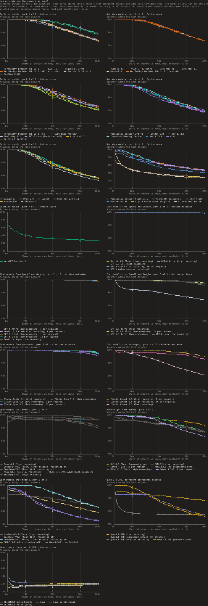
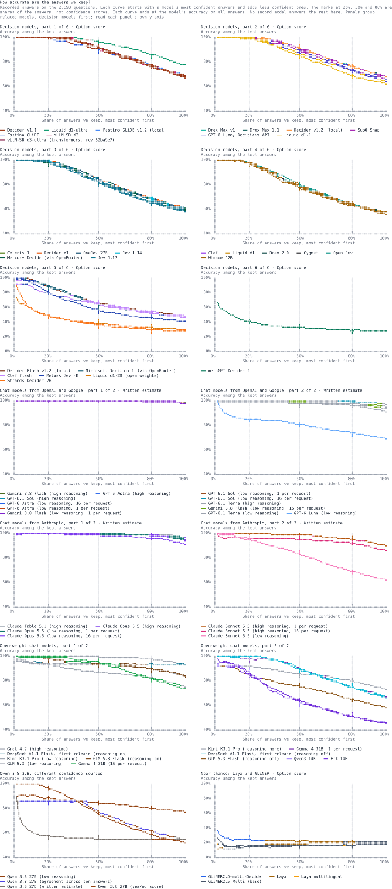
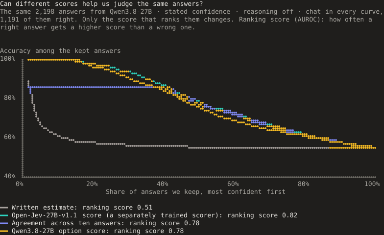
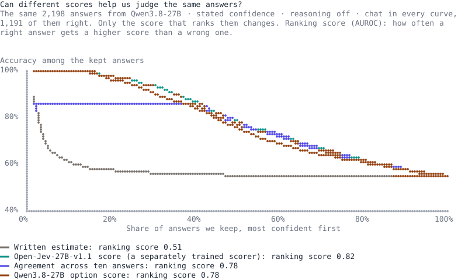
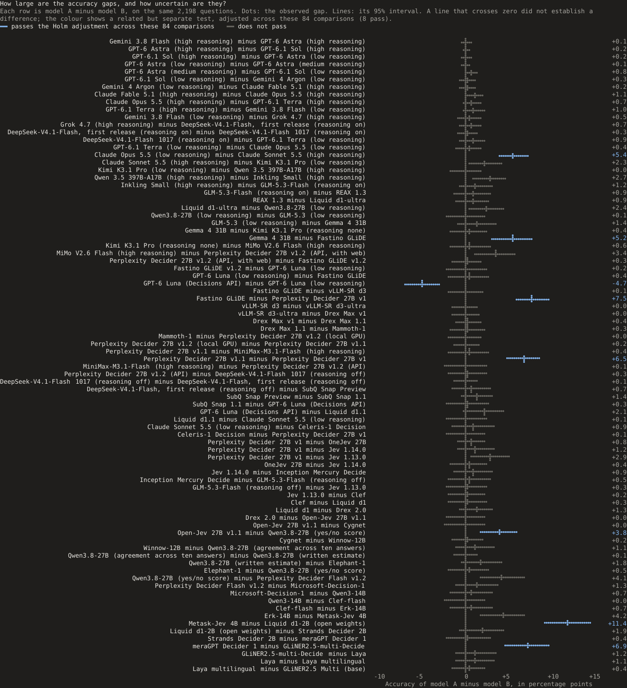
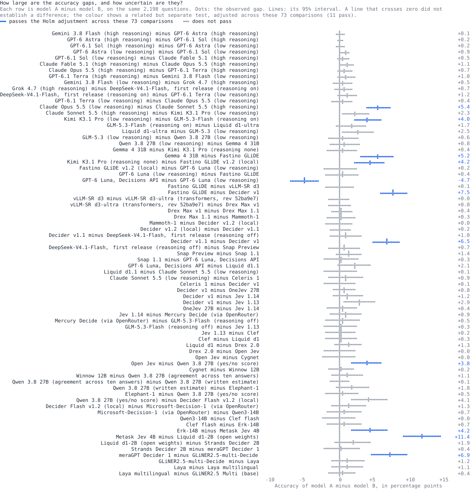

Method
How we tested confidence, cost and accuracy
We tested 80 models in 103 setups on a reading comprehension and grammar test in native Turkish (not translated): 2,198 questions. A setup is one model with one set of settings. We measured four things: how often each was right, whether its confidence found the answers worth keeping, whether it answered the same way again, and its cost and time.
This page covers the Turkish reading and grammar test. Page images and Hallucination explain their own methods on their pages: Page images under How the benchmark was run and Hallucination under Our method.
At a glance
Each test has its own page and its own ranking; no score combines them.
| Benchmark | Questions | What it measures | Main measure |
|---|---|---|---|
| Turkish reading and grammar | 2,198 | Reading comprehension and grammar, in native Turkish | Accuracy: right answers over the questions |
| English reading | 547 | The Turkish test's kept reading questions, translated into English | Accuracy in English |
| English and Turkish | 547 | The same setups on the same reading questions in both languages | The change in accuracy from Turkish to English |
| Page images | 763 | Questions that point at underlined or numbered words: from the text (A), a picture of the page (B), both (C) or an OCR model's reading (D) | Accuracy in each condition |
| Hallucination | 2,198 | The Turkish test's questions with a sixth option, “Bilmiyorum” (I don't know) | Non-hallucination rate: “Bilmiyorum” over “Bilmiyorum” plus wrong answers |
| Web grounding | 2,198 | One model with web search off and on | Accuracy, non-hallucination, latency and cost, off against on |
| PWS-Decisions | 100 | Parallel Web Systems' benchmark of dated web facts, asked of the decision models | Accuracy over three runs per setup; not part of the Turkish ranking |
How the site is laid out
- The top bar holds the site's name, Reading bench, and six tabs: Text, Vision, Questions, Highlights, Experiments and About. Text is the home page with the Leaderboard; its filter picks the models: All models, Chat models and Decision models, and its part switch the test: English, Turkish or both. Vision is the Page images board, a test of its own.
- Experiments leads to Hallucination, Web grounding, PWS-Decisions and the Artificial Analysis comparison. Hallucination is a test of its own, ranked on its own page.
- Web grounding: its page is linked from Experiments, both English pages and the Perplexity model pages.
- PWS-Decisions: its own page, linked from Experiments, the web grounding page and both English pages.
How we ask the models
- Decision models: each question goes to the model with its lettered options; we use only its pick and its score for each option (Models and setups).
- Chat models: asked in Turkish for their answer's letter and, where needed, a confidence score, in a structured reply (What we sent); the small open chat models asked for a plain answer line (Gemma 4 E4B · default reasoning · chat and LFM2.5-2.6B · default reasoning · chat) write only a last line “CEVAP: X”, with no schema and no confidence, so theirs is not measured.
Turkish reading and grammar
- Measures: how often each setup was right, whether its confidence found the answers worth keeping, whether it answered the same way again, and its cost and time.
- Questions: 656 Reading and 1,542 Grammar questions in 20 topics, answer key version 2 (The questions).
- Scoring: accuracy with its 95% interval; the ranking score and the calibration gap for confidence; cost per 1,000 questions at list prices; median latency per request (How we measure).
- Details: the sections below.
Page images
- Questions: 763 of the Turkish test's questions: 229 at underlined words and 543 at numbered words.
- Scoring: accuracy in each condition over the 763 questions; two conditions of a model compared with the exact McNemar test on the same questions.
- Details: How the benchmark was run, on its page.
Hallucination
- Questions: the Turkish test's 2,198 questions, each with “Bilmiyorum” as option F, never correct, and one added sentence in the instructions.
- Scoring: accuracy, attempt rate and the non-hallucination rate; for comparison, the same model's five-option run held back by its own confidence at about the same attempt rate.
- Details: Our method, on its page.
Version history
Every results version and what changed: the results changelog; changes to the answer key: the key changelog.
What we found
No model led on every measure: accuracy, ranking answers by confidence and confidence that matches the hit rate are separate strengths. Gemma 4 31B, a chat model, scored higher than every decision model except KnowLine-31B-Gen1.5, REAX 1.3, Gemini Decision 1 · 20261111 and d1-ultra on Reading (90.9%) and Grammar (65.6%) (GLiDE 27B tied with it on Reading), but its confidence matched its hit rate less closely than the best decision models' did.
How a model gives its confidence matters. GPT-6 Luna through OpenAI's Decisions API ranked its answers better than Luna writing its confidence (ranking score 0.82 against 0.69) but got fewer right (63.6% against 68.3%), with a different access method and request size. Among decision models, its calibration gap (2.4 points) was fourth, behind d1.1 (2.0 points), Gemini Decision 1 (2.0 points) and GLiDE 27B (2.3 points).
Cheaper chat models remain alternatives. GPT-6.1 Sol scored 96.7% at an estimated cost 79% below GPT-6 Astra's (97.6%). Gemini 3.8 Flash at high reasoning scored 98.1%, and the test over all pairs did not establish a difference from Astra.
Erk-14B is Qwen3-14B with extra Turkish training by eCloud. Its calibration gap was 13.5 points against 41.0 for its base, with no accuracy difference detected (45.0% against 45.7%); the training may have changed more than language knowledge.
On Artificial Analysis' Decision Index (English tasks), Jev 1.13 leads with 58, ahead of GLiDE and Microsoft-Decision-1 (54). Our order differs. In both tests, confidence is less reliable on some question types: knowledge and reasoning there, grammar here.
The questions
The test has 656 Reading and 1,542 Grammar questions in 20 topics, so 70% are Grammar. These results cover this question bank only. We did not test whether they hold in other languages or for other tasks. Reading asks about the meaning of words, sentences and passages; Grammar asks about word endings, word types and sentence structure. We report the two separately.
Topics 1 to 6 are Reading and 7 to 20 Grammar; the Topics page gives each one's results. Each question has five options: guessing averages 20%, and always choosing E, the most common right letter, scores 22.7%. Models can favour some letters whatever the question says.8
An optional exam mix reweights the scores to the Turkish section of the first stage of Turkey's 2026 university entrance exam (TYT): 33 Reading and seven Grammar questions. It is not a score on the exam itself.
TurkishMMLU3 covers more than 10,000 Turkish questions in nine school subjects, and HELM4 sets accuracy beside calibration and efficiency. We study the decision models' own option scores, and using them to decide when another model should answer. We do not know what most models saw in training, so we cannot test whether less familiar tasks cause more mistakes.
How we checked the questions and answer key
We use version 2 of the question set. Our first copy of the book lost the underline in 196 of 229 questions that point to underlined words, and the numbers attached to words in 186 more; we copied flagged questions again and checked them against the page images. Version 2 changes the text or key of 375 questions and makes 12 more possible to score.
Wrong keys are common in test sets and can change rankings.20 We reviewed 25 disputed cases (confident mistakes, and questions where several strong models disagreed with the key), confirmed 13 keys and removed 12 questions: in six the page image did not settle the answer, and in six the printed key could not be established. We score 2,198 questions; 12 stay marked uncertain, and 493 carry a verified label.
The removal raised most models' accuracy by at most about 0.5 points but mattered more for confident mistakes. Among wrong answers at 99% or more, it removed six of eight for Qwen's yes or no scoring, three of eight for Astra, two of three for Jev 1.13 and two of three for d1. Later runs did not get this targeted review.
For models tested on both versions, accuracy on the repaired questions rose 11 to 30 points, apart from Laya and Laya Multilingual, whose accuracy on them did not rise. Removed questions stay out of accuracy and confidence, but their time, tokens and money stay in the totals.
Every setup is scored on the same frozen key, version 2. A fix needs a check against the book's key or a second reviewer, and it rescores every run under a new version; the key changelog lists every change.
Our quality control of 12 November 2026 found four scored questions (IDs 292, 3219, 3243 and 3287) whose stored question points at a passage or dialogue that our copy of the book lost: the passage is empty and there is no figure. All four are also among the English reading track's kept questions, in the English translation of the same item; none is among the Page images questions. We keep every score, denominator and the filter of the 12 questions marked uncertain as first published, so these questions count in every run as they did; this is a limit of the test, disclosed here. The quality manifest lists them with metadata only.
The source is the practice book TYT IQ Turkish Question Library (title translated) from Paraf, ISBN
978-625-7423-18-2 (© 2022, no edition number). We do not publish its copyrighted questions; with the book, the scripts in the
repository's runner folder rebuild a matching set, matched by each question's ID, topic, page and number.
Models and setups
A decision model scores the options we give it, and we used only its pick and its scores. A chat model writes its answer, and some reason first. Luna through the Decisions API counts as a decision model, because the service gives a probability for each option.
A setup is one way of running a model: access, reasoning setting, questions per request and other settings. We tested 103 setups of 80 models. Each name links to its setup's page; the results file keeps each identifier, server and hardware.
| Model or setup | Why we included it |
|---|---|
| Jev 1.14 and Jev 1.13 | TypeSafe's hosted decision model, versions 1.13 and 1.14; Open Jev compares with 1.13. |
| d1-ultra, Perplexity Decider 27B v1.2 API · with web, Perplexity Decider 27B v1.1, Perplexity Decider 27B v1.2 API, d1.1, Perplexity Decider 27B v1 and d1 | Perplexity's Decisions API (three versions) and Liquid's API (d1, d1-ultra and d1.1); d1 ran on the free tier, its cost estimated at Liquid's list price. |
| Clef | Cloudflare's model, on our hardware: it adapts Qwen 3.8 27B and scores all options in one pass. |
| Clef-Flash | Cloudflare's smaller model: Qwen 3.5 9B, with Clef's scoring method and release code. |
| Metask-Jev-4B | It adapts Qwen 3.5 4B and lists Turkish among its training languages. |
| Cygnet | blockbrain-ai's recipe on an unchanged Gemma 4 12B IT, served by vLLM: answer letter probabilities rescaled with a temperature of 3.4. |
| Winnow-12B | Gemma 4 12B IT trained for decisions, published only as GGUF files: the recommended Q8_0 file (eight bits per weight) on its author's llama.cpp-based server. |
| GLiDE API | Fastino's System One API. GLiDE reasons more on uncertain cases, which we could not switch off. |
| celeris-1-decision | Celeris's System One API: probabilities rounded to whole points, no model size or design published. |
| SubQ Snap Preview and SubQ Snap 1.1 | SubQ's Decisions API, in public preview, with no model size or design published; Snap 1.1's 32-bit probabilities passed our check within 32-bit rounding, an experimental rule of ours. |
| Decider 1 | meraGPT's System One API: its own model, with no size or design published; the name serves meraGPT's current version, here the one of 19 October 2026. |
| Gemini Decision 1 20261111, Mercury Decide and Microsoft-Decision-1 | Microsoft's, Inception's and Google's decision models via OpenRouter's System One route (paid; Gemini Decision 1 from Google AI Studio's endpoint); request times include OpenRouter's. |
| Perplexity Decider 27B v1.2 DGX Spark and Perplexity Decider Flash v1.2 | Perplexity's released v1.2 checkpoints, run on our hardware: additional local setups; v1.2 also ran through the API. |
| GLiDE 27B, GLiDE v1.2, GLiDE 9B, GLiDE 2B, GLiDE 0.8B and GLiDE 0.4B | Fastino's released v1.2 checkpoint on our hardware, with the server it ships: one pass per question, nothing generated. The hosted GLiDE gave the same answers on 20 sample questions on 22 October; the other GLiDE row is the hosted model of 6 October. |
| d3 | The vLLM Semantic Router's released checkpoint on our hardware, served by a vLLM nightly through its System One endpoint (with --max-num-seqs 256, as the default did not fit the GPU at start-up). |
| d3-ultra | The vLLM Semantic Router's released d3-ultra checkpoint on our hardware, through the server its repository ships (its own Transformers runtime): vLLM does not serve it yet. |
| OneJev-27B and OneJev1.6-0.8B | OmniJev's released OneJev-27B on our hardware, through the server its package ships, with its default settings, and OneJev1.6-0.8B on a DGX Spark in BF16, through Flide 0.1.11's server. |
| Drex Max, Drex Max v1.1 and Drex 2.0 | Nace.AI's hosted Drex Max v1.1 and Drex 2.0, and its released Drex Max on our hardware through Nace's own loader; Drex Max v1.1 and v1 are different checkpoints. |
| d1-2B | Liquid AI's released d1-2B on our hardware, through its model card's own call; Turkish is not among the languages Liquid lists for it. |
| Mammoth-1 and Elephant-1 | Base Labs' released elephant-1 and mammoth-1 on our hardware, through their model cards' loader, text only; their cards list English only. |
| REAX 1.3 | REAX's released REAX 1.3 on our hardware in FP8, through the maker's own engine: the 50/50 mean of two parts' option probabilities (Gemma and Qwen lines), text only; its card lists English only. |
| KnowLine-31B-Gen1.5, KnowLine 4B Gen5.5 and KnowLine-0.8B-Gen1 | PelaAI's released KnowLine-31B-Gen1.5 and 0.8B Gen1 (BF16) and KnowLine 4B Gen5.5 (FP8 at load, as its card's code does) on a DGX Spark, through their repository's own server (SGLang; it reads a request of up to 3,000 tokens twice); the 31B and 4B are open decision models of the Jev Decision Index; their cards list English and Chinese. |
| StartLux-Decision-v1.1-2B-Instant and StartLux-Decision-v1.1-0.8B-Instant | StartLux Labs' released StartLux-Decision-v1.1-2B-Instant and -0.8B-Instant on a DGX Spark in BF16, through their package's own server (vLLM 0.31.0, not the card's 0.19.1, which has no build for that processor); non-commercial weights, used for evaluation; their cards list English only. |
| GLiClass v4 Edge | Knowledgator's released GLiClass v4 Edge, a 440 million parameter zero-shot classifier, on a DGX Spark in BF16, through its model card's own System One mapping: the options are its labels, scored in one pass per question; an input over the card's 16,384 tokens is refused, never cut; text only; its card lists English. |
| Strands Decider 2B | Amazon's released model: an adapter and a scoring part on Qwen 3.5 2B Base, with its own server. |
| Laya and Laya Multilingual | Both released models, on our hardware; each scores all options in one pass. |
| GLiNER2.5 Multi | Fastino's 287 million parameter text classifier, scoring the options as labels: a much smaller baseline. |
| GLiNER2.5-multi-Decide | The same 287 million parameter model, trained by Fastino for decisions. |
| Open-Jev-27B-v1.1 | The released open model, with its own scoring part and calibration setting. |
| Qwen3.8-27B yes/no scoring | Open Jev's base model and prompts without its trained parts: the preference for Yes over No, with a calibration temperature of 1. |
| Qwen3.8-27B stated confidence · reasoning off · chat | The base model chooses an option and writes its confidence. |
| Qwen3.8-27B vote share · reasoning off · chat | Ten sampled answers: the most common one, with the share that agrees as confidence. |
| Claude Fable 5.2 max · chat, Gemini 3.8 Flash high · chat, GPT-6 Astra high · chat, GPT-6.1 Sol high · chat, Gemini 4 Argon low · chat, Claude Fable 5.1 high · chat, Claude Opus 5.5 high · chat, GPT-6.1 Terra high · chat, Grok 4.7 high · chat, Claude Sonnet 5.5 high · chat · 1 per request, Muse Ember max · chat, Kimi K3.1 Pro low · chat, Qwen3.5-397B-A17B high · chat, Inkling-Small high · chat · Jul 2026, GLM-5.3 low · chat, MiMo-V2.6-Flash high · chat, GPT-6 Luna low · chat, MiniMax-M3.1-Flash high · chat, Qwen3.8 Flash no reasoning · chat and Claude Haiku 5.5 max · chat | Chat models for comparison; each writes a confidence estimate. Several ran at more than one reasoning setting. |
| GPT-6 Luna Decisions API | OpenAI's Decisions API, in beta, one question per request. The other Luna run writes its confidence through Codex, 16 questions per request. |
| DeepSeek-V4.1-Flash reasoning on · chat · first release, DeepSeek-V4.1-Flash reasoning on · chat · 1017, Qwen3.8-27B low · chat and Gemma 4 31B reasoning off · chat | On our hardware, with answer letter probabilities. The DeepSeek and Qwen reasoning runs also sample. |
| GLM-5.3-Flash reasoning on · chat | Z.ai's model with TensorFold: 320 billion parameters, about 18 billion used per token (a mixture of experts); it writes its confidence. Mia's AI Lab's EXL3 checkpoint, with DFlash2 speculative decoding. |
| Qwen3-14B reasoning off · chat and Erk-14B reasoning off · chat | Erk continues this Qwen model's training on Turkish text; both ran with the same requests and settings. |
| Gemma 4 E4B default reasoning · chat and LFM2.5-2.6B default reasoning · chat | Small open chat models on logic's servers, one question per request with a plain answer line (“CEVAP: X”, no answer schema) and logic's own request settings; they state no confidence, so it is not measured. |
Model names and tags
Every page names a model by its official name only, in its maker's spelling (a maker's display title over its repository name), with a small tag beside it for how we ran that setup: its setting, route and snapshot (as “high · chat”, “API · with web”, “DGX Spark”, “1017”), and “1 per request” where a model's setups differ only in that; a decision model with one setup has none. Two setups of one model differ only by their tag. The results file keeps each setup's own name. Not every name rests on a maker's quote: the table gives each name we show instead of a setup's recorded one, with its source and how we know it (a maker's quote, inferred from a sibling's card, only an OpenRouter listing, or unverified, kept as the three sites show it).
Model sizes and classes
Each model's size is its maker's figure for the released model or our count of the released checkpoint's tensors (logical shapes, never quantized storage), with what it covers and the checkpoint's revision; each size says whether the model is dense or a mixture of experts (MoE: as its maker states it, or as the checkpoint we counted shows it), a mixture of experts with the parameters active per token (or "active not disclosed by maker"), and a model with per-layer embeddings its effective size where the maker states one. A model whose maker publishes no size reads "not disclosed by maker"; we never guess one from a name or from an open sibling. The details box of each Leaderboard row and each model page give the same wording.
Size by total parameters, as disclosed by the maker (for MoE models the label also shows active parameters): Tiny under 6B · Small 6B–15B · Medium over 15B up to 40B · Large over 40B. Models of undisclosed size, by standard list price per 1M input tokens: Efficient up to $0.50 · Workhorse up to $3 · Flagship over $3.
Every board with model rows (the Leaderboard and each page with the model keys) has the same Class keys: a class narrows the rows of its tables and bar charts, together with the type keys (All, Chat models, Decision models). The setups only this site ran (Erk-14B · reasoning off · chat, GLiNER2.5 Multi, GLiNER2.5-multi-Decide, Laya, Laya Multilingual and Qwen3-14B · reasoning off · chat) are in no class; they show under Class: All.
| Model | Parameters | Class | Source |
|---|---|---|---|
| celeris-1-decision | not disclosed by maker | Closed · Efficient | docs.celeris.ai/decisions; celeris.ai/decisionsread 9 November 2026 |
| Claude Fable 5.1 high · chat | not disclosed by maker | Closed · Flagship | www.anthropic.com/claude/fable; platform.claude.com/docs/en/models/overviewread 9 November 2026 |
| Claude Fable 5.2 max · chat | not disclosed by maker | Closed · Flagship | www.anthropic.com/claude-fable-and-mythos-5-2; platform.claude.com/docs/en/models/overviewread 11 November 2026 |
| Claude Haiku 5.5 max · chat | not disclosed by maker | Closed · Efficient | www.anthropic.com/claude-haiku-5-5; platform.claude.com/docs/en/models/overviewread 10 November 2026 |
| Claude Opus 5.5 high · chat | not disclosed by maker | Closed · Flagship | www.anthropic.com/claude-opus-5-5; platform.claude.com/docs/en/models/overviewread 9 November 2026 |
| Claude Sonnet 5.5 high · chat · 1 per request | not disclosed by maker | Closed · Workhorse | www.anthropic.com/claude-sonnet-5-5; platform.claude.com/docs/en/models/overviewread 9 November 2026 |
| Clef | 27.5B denselanguage model with its LM head + 0.46B vision encoder + joint schema head | Open · 27B | counted from the checkpoint's safetensors, Cloudflare/clef@2f3de3d; huggingface.co/Cloudflare/clefread 9 November 2026 |
| Clef-Flash | 9.5B denselanguage model with its LM head + 0.46B vision encoder + joint schema head | Open · 9.0B | counted from the checkpoint's safetensors, Cloudflare/clef-flash@fde727a; huggingface.co/Cloudflare/clef-flashread 9 November 2026 |
| Cygnet | 12B denseGemma 4 12B IT: language model (tied embeddings) + vision and audio embedders | Open · 12B | counted from the checkpoint's safetensors, google/gemma-4-12B-it@707f0a3; huggingface.co/google/gemma-4-12B-itread 9 November 2026 |
| DeepSeek-V4.1-Flash reasoning on · chat · 1017 | not disclosed by makerV4.1 Flash card (first release): 552B backbone + 196B conditional memory; 8B active in prefill, 16B in decode; the 1017 card states no size | Open · 552B MoE · 16B active | huggingface.co/deepseek-ai/DeepSeek-V4.1-Flash-1017; huggingface.co/deepseek-ai/DeepSeek-V4.1-Flashread 9 November 2026 |
| DeepSeek-V4.1-Flash reasoning on · chat · first release | 552B MoE · 8B to 16B activebackbone, as DeepSeek states it (8B active in prefill, 16B in decode); the 196B Engram memory is separate | Open · 552B MoE · 16B active | huggingface.co/deepseek-ai/DeepSeek-V4.1-Flashread 9 November 2026 |
| Drex 2.0 | 35.1B MoE · 3B activemixture of experts: language model with its LM head + 0.45B vision tower (not loaded for text, per the card); about 3B active per token, as Nace states it | Open · 35B MoE · 3.0B active | counted from the checkpoint's safetensors, nace-ai/drex-v2.0@e646674; huggingface.co/nace-ai/drex-v2.0; console.nace.ai/docs/drex/reference/modelsread 9 November 2026 |
| Drex Max v1.1 | not disclosed by maker | Closed · Efficient (provisional) | console.nace.ai/docs/drex/reference/models; console.nace.ai/docs/drex/guides/drex-maxread 9 November 2026 |
| Drex Max | 26.1B denselanguage model (no LM head) + 0.46B vision encoder + 255-way readout | Open · 27B | counted from the checkpoint's safetensors, nace-ai/drex-max-v1@cac65e1; huggingface.co/nace-ai/drex-max-v1read 9 November 2026 |
| Elephant-1 | 9.4B denselanguage model with its LM head + 0.46B vision encoder | Open · 9.0B | counted from the checkpoint's safetensors, baselabs/elephant-1@b3f8a93; huggingface.co/baselabs/elephant-1read 9 November 2026 |
| Erk-14B reasoning off · chat | 14.8B denselanguage model with its LM head (text only) | Open · 14B | counted from the checkpoint's safetensors, ecloudtech/Erk-14B@8584b14; huggingface.co/ecloudtech/Erk-14Bread 9 November 2026 |
| GLiDE API | not disclosed by maker | Closed · Efficient | docs.fastino.ai/inference/systemone; fastino.ai/blog/introducing-glide-the-first-thinking-decision-modelread 9 November 2026 |
| GLiDE v1.2 | 26.1B denselanguage model (no LM head) + 0.46B vision encoder + 255-way readout | Open · 27B | counted from the checkpoint's safetensors, fastino/GLiDE@a7e4589; fastino.space/blog/glide-decision-model-familyread 9 November 2026 |
| Gemini 3.8 Flash high · chat | not disclosed by maker | Closed · Workhorse | deepmind.google/models/model-cards/gemini-3-8-flash/read 9 November 2026 |
| Gemini 4 Argon low · chat | not disclosed by maker | Closed · Flagship | deepmind.google/models/model-cards/gemini-4-argon/read 9 November 2026 |
| Gemini Decision 1 20261111 | not disclosed by maker | Closed · Efficient | aistudio.google.com/docs/models/gemini-decision-1; openrouter.ai/google/gemini-decision-1; blog.google/innovation-and-ai/technology/developers-tools/gemini-decisions-api/read 11 November 2026 |
| Gemma 4 31B reasoning off · chat | 31.3B denselanguage model (tied embeddings) + 0.58B vision encoder | Open · 31B | counted from the checkpoint's safetensors, google/gemma-4-31B-it@842da37; huggingface.co/google/gemma-4-31B-itread 9 November 2026 |
| Gemma 4 E4B default reasoning · chat | 8B dense · 4.5B effectivelanguage model with per-layer embeddings + vision and audio encoders; effective size as Google states it | Open · 8.0B | counted from the checkpoint's safetensors, google/gemma-4-E4B-it@4ecc2ba; huggingface.co/google/gemma-4-E4B-itread 9 November 2026 |
| GLiClass v4 Edge | 440M denseDeBERTa-v3-large encoder + label projectors and scorer + calibrator (text only) | Open · 0.4B | counted from the checkpoint's safetensors, knowledgator/gliclass-v4-edge@885af1a; huggingface.co/knowledgator/gliclass-v4-edgeread 11 November 2026 |
| GLiDE 0.4B | 395M denseencoder (no MLM head) + 255-way readout | Open · 0.4B | counted from the checkpoint's safetensors, fastino/GLiDE-0.4B@6bda7ab; huggingface.co/fastino/GLiDE-0.4Bread 10 November 2026 |
| GLiDE 0.8B | 753M denselanguage model (no LM head) + 255-way readout | Open · 0.8B | counted from the checkpoint's safetensors, fastino/GLiDE-0.8B@9eacdee; huggingface.co/fastino/GLiDE-0.8Bread 10 November 2026 |
| GLiDE 27B | 26.1B denselanguage model (no LM head) + 0.46B vision encoder + 255-way readout | Open · 27B | counted from the checkpoint's safetensors, fastino/GLiDE-27B@4d32743; huggingface.co/fastino/GLiDE-27Bread 10 November 2026 |
| GLiDE 2B | 1.9B denselanguage model (no LM head) + 255-way readout | Open · 1.9B | counted from the checkpoint's safetensors, fastino/GLiDE-2B@00f122c; huggingface.co/fastino/GLiDE-2Bread 10 November 2026 |
| GLiDE 9B | 7.9B denselanguage model (no LM head) + 255-way readout | Open · 7.9B | counted from the checkpoint's safetensors, fastino/GLiDE-9B@ab54df5; huggingface.co/fastino/GLiDE-9Bread 10 November 2026 |
| GLiNER2.5 Multi | 287M densemDeBERTa-v3-base encoder + extraction and classification heads | Open · 0.3B | counted from the checkpoint's safetensors, fastino/gliner2.5-multi-v1@2ca71aa; huggingface.co/fastino/gliner2.5-multi-v1read 9 November 2026 |
| GLiNER2.5-multi-Decide | 287M densemDeBERTa-v3-base encoder + extraction and classification heads | Open · 0.3B | counted from the checkpoint's safetensors, fastino/GLiNER2.5-multi-Decide@a35a0cd; huggingface.co/fastino/GLiNER2.5-multi-Decideread 9 November 2026 |
| GLM-5.3 low · chat | 753.3B MoE, active not disclosed by makermixture of experts: language model with its LM head + one multi-token prediction layer (text only); Z.ai states no active count | Open · Workhorse | counted from the checkpoint's safetensors, zai-org/GLM-5.3@ba32f8c; huggingface.co/zai-org/GLM-5.3; docs.z.ai/guides/llm/glm-5.3read 9 November 2026 |
| GLM-5.3-Flash reasoning on · chat | 320B MoE · 18B activemixture of experts, as Z.ai states it | Open · 320B MoE · 18B active | huggingface.co/zai-org/GLM-5.3-Flashread 9 November 2026 |
| GPT-6 Astra high · chat | not disclosed by maker | Closed · Flagship | developers.openai.com/api/docs/models/gpt-6-astraread 9 November 2026 |
| GPT-6 Luna low · chat | not disclosed by maker | Closed · Efficient | developers.openai.com/api/docs/models/gpt-6-lunaread 9 November 2026 |
| GPT-6.1 Sol high · chat | not disclosed by maker | Closed · Workhorse | developers.openai.com/api/docs/models/gpt-6.1-solread 9 November 2026 |
| GPT-6.1 Terra high · chat | not disclosed by maker | Closed · Workhorse | developers.openai.com/api/docs/models/gpt-6.1-terraread 9 November 2026 |
| Grok 4.7 high · chat | not disclosed by maker | Closed · Workhorse | media.x.ai/v1/website/4p7card-5eccc980.pdf; x.ai/news/grok-4-7; docs.x.ai/developers/modelsread 9 November 2026 |
| Mercury Decide | not disclosed by maker | Closed · Efficient | www.inceptionlabs.ai/read 9 November 2026 |
| Inkling-Small high · chat · Jul 2026 | 266B MoE · 12B activemixture of experts: language model + multi-token prediction layer + vision and audio encoders, counted; active per token as the card states it; card: 276B total, 12B active | Open · 276B MoE · 12B active | counted from the checkpoint's safetensors, thinkingmachines/Inkling-Small@8cc5877; thinkingmachines.ai/model-card/inkling-small/; huggingface.co/thinkingmachines/Inkling-Smallread 9 November 2026 |
| Jev 1.13 | not disclosed by maker | Closed · Efficient | docs.typesafe.ai/models; typesafe.ai/blog/jev-1-14read 9 November 2026 |
| Jev 1.14 | not disclosed by maker | Closed · Efficient | docs.typesafe.ai/models; typesafe.ai/blog/jev-1-14read 9 November 2026 |
| Kimi K3.1 Pro low · chat | 2.8T MoE · 104B activemixture of experts, as the model card states it | Open · 2.8T MoE · 104B active | huggingface.co/moonshotai/Kimi-K3.1-Proread 9 November 2026 |
| KnowLine-0.8B-Gen1 | 873M denselanguage model (tied embeddings) + multi-token prediction layer + 0.10B vision encoder | Open · 0.8B | counted from the checkpoint's safetensors, PelaAI/KnowLine-0.8B-Gen1@6b27831; huggingface.co/PelaAI/KnowLine-0.8B-Gen1read 11 November 2026 |
| KnowLine-31B-Gen1.5 | 31.3B denselanguage model (tied embeddings) + 0.58B vision encoder | Open · 31B | counted from the checkpoint's safetensors, PelaAI/KnowLine-31B-Gen1.5@8e56aa1; huggingface.co/PelaAI/KnowLine-31B-Gen1.5read 10 November 2026 |
| KnowLine 4B Gen5.5 | 4.7B denselanguage model (tied embeddings) + multi-token prediction layer + 0.33B vision encoder | Open · 4.0B | counted from the checkpoint's safetensors, PelaAI/KnowLine-4B-Gen5.5@779944d; huggingface.co/PelaAI/KnowLine-4B-Gen5.5read 10 November 2026 |
| Laya | 421M denseModernBERT-large encoder + decision head | Open · 0.4B | counted from the checkpoint's safetensors, convaiinnovations/laya@c5d7873; huggingface.co/convaiinnovations/layaread 9 November 2026 |
| Laya Multilingual | 322M densemmBERT-base encoder + decision head | Open · 0.3B | counted from the checkpoint's safetensors, convaiinnovations/laya@c5d7873 (multilingual/); huggingface.co/convaiinnovations/layaread 9 November 2026 |
| LFM2.5-2.6B default reasoning · chat | 2.7B denselanguage model (tied embeddings, text only) | Open · 2.7B | counted from the checkpoint's safetensors, LiquidAI/LFM2.5-2.6B@7141b56; huggingface.co/LiquidAI/LFM2.5-2.6Bread 12 November 2026 |
| d1 | not disclosed by maker | Closed · Efficient | www.liquid.ai/blog/d1-decision-modelread 9 November 2026 |
| d1-2B | 1.9B denselanguage model (tied embeddings) + 0.16B vision encoder + projector | Open · 1.9B | counted from the checkpoint's safetensors, LiquidAI/d1-2B@10e7671; huggingface.co/LiquidAI/d1-2Bread 9 November 2026 |
| d1-ultra | not disclosed by maker | Closed · Efficient | www.liquid.ai/blog/d1-ultraread 9 November 2026 |
| d1.1 | not disclosed by maker | Closed · Efficient | docs.liquid.ai/lfm/models/decision-modelsread 9 November 2026 |
| Mammoth-1 | 27.4B denselanguage model with its LM head + 0.46B vision encoder | Open · 27B | counted from the checkpoint's safetensors, baselabs/mammoth-1@61cec44; huggingface.co/baselabs/mammoth-1read 9 November 2026 |
| Decider 1 | not disclosed by maker | Closed · Efficient | meragpt.com/models/decider-1; meragpt.com/blog/introducing-decider-1read 9 November 2026 |
| Metask-Jev-4B | 4.5B denseQwen3.5-4B with its LoRA merged: language model (tied embeddings) + 0.33B vision encoder | Open · 4.5B | counted from the checkpoint's safetensors, wayfind/metask-jev-4b-policy-mix@ea20fe8; huggingface.co/wayfind/metask-jev-4b-policy-mixread 9 November 2026 |
| Microsoft-Decision-1 | not disclosed by maker | Closed · Efficient | commandline.microsoft.com/microsoft-decision-1-model-foundry/read 9 November 2026 |
| MiMo-V2.6-Flash high · chat | 309B MoE · 15B activemixture-of-experts backbone, as Xiaomi states it | Open · 309B MoE · 15B active | huggingface.co/XiaomiMiMo/MiMo-V2.6-Flash-RLread 9 November 2026 |
| MiniMax-M3.1-Flash high · chat | 428B MoE · 23B activemixture of experts, as MiniMax states it | Open · 428B MoE · 23B active | huggingface.co/MiniMaxAI/MiniMax-M3.1-Flashread 9 November 2026 |
| Muse Ember max · chat | not disclosed by maker | Closed · Efficient | research.meta.ai/blog/muse-ember; dev.meta.ai/models/muse-emberread 10 November 2026 |
| OneJev-27B | 27.4B denselanguage model with its LM head + 0.46B vision encoder | Open · 27B | counted from the checkpoint's safetensors, OmniJev/OneJev-27B@a5e5f55; huggingface.co/OmniJev/OneJev-27Bread 9 November 2026 |
| OneJev1.6-0.8B | 853M denselanguage model (tied embeddings) + 0.10B vision encoder | Open · 0.9B | counted from the checkpoint's safetensors, OmniJev/OneJev1.6-0.8B@bcd88a3; huggingface.co/OmniJev/OneJev1.6-0.8Bread 11 November 2026 |
| Open-Jev-27B-v1.1 | 27.8B denseQwen3.8-27B (with its vision encoder) + LoRA adapter and scalar decision head (15.5M); the repo holds only the adapter and head | Open · 27B | counted from the checkpoints' safetensors, ZefanCai/Open-Jev-27B-v1.1@28cf730 on Qwen/Qwen3.8-27B@1d4bf0f; huggingface.co/ZefanCai/Open-Jev-27B-v1.1read 9 November 2026 |
| Perplexity Decider 27B v1 | 26.1B denselanguage model (no LM head) + 0.46B vision encoder + 255-way readout | Open · 27B | counted from the checkpoint's safetensors, perplexity-ai/pplx-decider-v1-27b@5117a6c; huggingface.co/perplexity-ai/pplx-decider-v1-27bread 9 November 2026 |
| Perplexity Decider 27B v1.1 | 26.1B denselanguage model (no LM head) + 0.46B vision encoder + 255-way readout | Open · 27B | counted from the checkpoint's safetensors, perplexity-ai/pplx-decider-v1.1-27b@5cd25e3; huggingface.co/perplexity-ai/pplx-decider-v1.1-27bread 9 November 2026 |
| Perplexity Decider 27B v1.2 API | 26.1B denselanguage model (no LM head) + 0.46B vision encoder + 255-way readout | Open · 27B | counted from the checkpoint's safetensors, perplexity-ai/pplx-decider-v1.2@225c913 (the same weights as cce0f3f); huggingface.co/perplexity-ai/pplx-decider-v1.2read 9 November 2026 |
| Perplexity Decider 27B v1.2 API · with web | 26.1B denselanguage model (no LM head) + 0.46B vision encoder + 255-way readout | Open · 27B | counted from the checkpoint's safetensors, perplexity-ai/pplx-decider-v1.2@225c913 (the same weights as cce0f3f); huggingface.co/perplexity-ai/pplx-decider-v1.2read 9 November 2026 |
| Perplexity Decider 27B v1.2 DGX Spark | 26.1B denselanguage model (no LM head) + 0.46B vision encoder + 255-way readout | Open · 27B | counted from the checkpoint's safetensors, perplexity-ai/pplx-decider-v1.2@225c913 (the same weights as cce0f3f); huggingface.co/perplexity-ai/pplx-decider-v1.2read 9 November 2026 |
| Perplexity Decider Flash v1.2 | 4.5B denselanguage model (tied embeddings) + 0.33B vision encoder + 255-way readout | Open · 4.0B | counted from the checkpoint's safetensors, perplexity-ai/pplx-decider-flash-v1.2@6d771ad; huggingface.co/perplexity-ai/pplx-decider-flash-v1.2read 9 November 2026 |
| Qwen3.5-397B-A17B high · chat | 397B MoE · 17B activemixture of experts, as Qwen states it | Open · 397B MoE · 17B active | huggingface.co/Qwen/Qwen3.5-397B-A17Bread 9 November 2026 |
| Qwen3-14B reasoning off · chat | 14.8B denselanguage model with its LM head (text only) | Open · 15B | counted from the checkpoint's safetensors, Qwen/Qwen3-14B@40c0698; huggingface.co/Qwen/Qwen3-14Bread 9 November 2026 |
| Qwen3.8 Flash no reasoning · chat | not disclosed by maker | Closed · Efficient | www.alibabacloud.com/help/en/model-studio/model-pricing; openrouter.ai/qwen/qwen3.8-flashread 11 November 2026 |
| Qwen3.8-27B low · chat | 27.8B denselanguage model with its LM head + 0.42B multi-token prediction layer + 0.46B vision encoder | Open · 27B | counted from the checkpoint's safetensors, Qwen/Qwen3.8-27B@1d4bf0f; huggingface.co/Qwen/Qwen3.8-27Bread 9 November 2026 |
| REAX 1.3 | 57.4B densetwo full models: part G (Gemma 4 31B line, with vision encoder) + part Q (Qwen3.8-27B line, with vision encoder and 255-way readout) | Open · 57B | counted from the checkpoint's safetensors, decisionmodels/REAX-1.3@fa4bf7e; huggingface.co/decisionmodels/REAX-1.3read 9 November 2026 |
| StartLux-Decision-v1.1-2B-Instant | 2.3B denselanguage model (tied embeddings) + multi-token prediction layer + 0.33B vision encoder | Open · 2.0B | counted from the checkpoint's safetensors, startlux-models/StartLux-Decision-v1.1-2B-Instant@f1e6cd1; huggingface.co/startlux-models/StartLux-Decision-v1.1-2B-Instantread 11 November 2026 |
| StartLux-Decision-v1.1-0.8B-Instant | 873M denselanguage model (tied embeddings) + multi-token prediction layer + 0.10B vision encoder | Open · 0.8B | counted from the checkpoint's safetensors, startlux-models/StartLux-Decision-v1.1-0.8B-Instant@6496ae6; huggingface.co/startlux-models/StartLux-Decision-v1.1-0.8B-Instantread 11 November 2026 |
| Strands Decider 2B | 2.3B denseQwen3.5-2B-Base (with its vision encoder) + LoRA adapter + readout head; the repo holds only the adapter and head | Open · 2.0B | counted from the checkpoints' safetensors, StrandsAgents/strands-decider-2B-hobson-v21@2b52a62 on Qwen/Qwen3.5-2B-Base@b1485b2; huggingface.co/StrandsAgents/strands-decider-2B-hobson-v21read 9 November 2026 |
| SubQ Snap 1.1 | not disclosed by maker | Closed · Efficient | docs.subq.ai/using-the-api/models/read 9 November 2026 |
| SubQ Snap Preview | not disclosed by maker | Closed · Efficient | docs.subq.ai/using-the-api/models/read 9 November 2026 |
| d3 | 26.1B denselanguage model (no LM head) + 0.46B vision encoder + 255-way readout | Open · 26B | counted from the checkpoint's safetensors, vllm-sr/d3@20f37b9; huggingface.co/vllm-sr/d3read 9 November 2026 |
| d3-ultra | 26.1B denselanguage model (no LM head) + 0.46B vision encoder + 255-way readout | Open · 26B | counted from the checkpoint's safetensors, vllm-sr/d3-ultra@52ba9e7; huggingface.co/vllm-sr/d3-ultraread 9 November 2026 |
| Winnow-12B | 11.9B denselanguage model only (Gemma 4 12B Unified architecture, LoRA merged; text only) | Open · 12B | counted from the GGUF's logical tensor shapes, EldanRing/Winnow-12B@b2b1421 (Winnow-12B-Q8_0.gguf); huggingface.co/EldanRing/Winnow-12Bread 9 November 2026 |
What we sent and which settings we used
Each question went with its lettered options. Chat models were asked, in Turkish, for their answer's letter and, where needed, a confidence score, in a structured reply (JSON); a connector turned the same question into each decision service's format. Most chat setups got 16 questions per request; decision models, Luna through the Decisions API, GLiNER and the Qwen 3.8 setups got one.
Gemma 4 E4B · default reasoning · chat and LFM2.5-2.6B · default reasoning · chat, small open chat models on logic's servers, were asked one question per request for a plain answer line instead: the letter on the reply's last “CEVAP: X” line, with no structured reply and no confidence, and only the request settings of logic's own runs of each model.
Claude Code and Codex runs were closed-book: no web search, no file or command tools, and an empty folder for each request. Earlier trial runs could find the source book online.
A missing answer, a refusal or a letter outside the options counts as wrong. The Decisions API declined 4 questions; GLM 5.3 Flash with reasoning left 128 unanswered when it hit the 65,536-token output limit; DeepSeek's first release with reasoning had the same limit and left 0.
| Setup | How it chose each token |
|---|---|
| Chat models on our hardware, reasoning off | Greedy decoding: the most likely next token |
| DeepSeek, reasoning on | Sampling, temperature 1.0, top p 1.0 (greedy decoding made its reasoning loop) |
| GLM 5.3 Flash, reasoning on | Server default: temperature 1.0, top p 0.95 (Z.ai's settings), top k 20; TensorFold's high reasoning |
| Qwen 3.8 27B, reasoning on | Server default: temperature 1.0, top p 0.95, top k 20 (Qwen's settings); the chat template's low reasoning effort |
| Qwen, ten answers | Temperature 0.7, top p 0.8, top k 20, presence penalty 1.5 |
| Hosted chat models | The reasoning setting each setup names, in its provider's words; the provider's own sampling where temperature cannot be set, temperature 1.0 through OpenRouter; Gemini reported no reasoning tokens at low |
| Small open chat models, plain answer line | The request settings of logic's own runs of each model, as its model page's How we called it gives them |
Sampling picks the next token at random by its probability. Temperature sets how strongly it favours likely tokens, top p and top k limit the candidates, and a presence penalty discourages repeats.
Does one question per request change the answers?
Every decision model got one question per request; the chat models' main runs got 16. So we asked six chat setups all 2,198 questions again, one per request, with the same prompt and settings.
| Setup | 16 questions per request | 1 question per request | Change | Exact McNemar test, Holm-adjusted |
|---|---|---|---|---|
| Claude Sonnet 5.5 (high reasoning) | 85.03% | 89.17% | 4.14 points higher95% interval: +2.77 to +5.51 points | p < 0.0001 |
| Gemini 3.8 Flash (low reasoning) | 93.27% | 97.13% | 3.87 points higher95% interval: +2.92 to +4.82 points | p < 0.0001 |
| Claude Opus 5.5 (low reasoning) | 90.45% | 93.31% | 2.87 points higher95% interval: +1.67 to +4.07 points | p < 0.0001 |
| GPT-6.1 Sol (low reasoning) | 96.68% | 96.72% | 0.05 points higher95% interval: −0.55 to +0.64 points | p = 1 |
| GPT-6 Astra (low reasoning) | 97.59% | 97.41% | 0.18 points lower95% interval: −0.69 to +0.32 points | p = 1 |
| Gemma 4 31B (reasoning off) | 73.11% | 66.79% | 6.32 points lower95% interval: −8.06 to −4.59 points | p < 0.0001 |
The exact McNemar test uses only the questions one run got right; Holm's correction covers this table. Each run with one question per request is a setup of its own.
An earlier test on 200 questions found no difference: Astra got 197 right with one question per request and 195 or 196 in five runs with 16, and Gemma 137 against 141 in five runs from an earlier server session.
Where each confidence score comes from
- Option score
- The probability a decision model, GLiNER or Qwen's yes or no scoring gives the chosen option.
- Written estimate
- A number GPT, Claude, Gemini, GLM or Qwen writes next to its answer.
- Answer letter probability
- For Gemma, DeepSeek, Qwen 3 14B and Erk, the probability of writing the chosen letter, rescaled over the option letters to 100%; with reasoning on, it comes after the reasoning.
- Agreement across ten answers
- The share of Qwen's ten answers that agree with the most common one (eight of ten gives 80%).
- None (not measured)
- Gemma 4 E4B · default reasoning · chat and LFM2.5-2.6B · default reasoning · chat, asked for a plain answer line, write only the answer letter: no confidence score, so their confidence is not measured.
We test each mechanism against the real answers before we trust it. Some services round: Luna through the Decisions API gave 80 distinct scores across 2,194 answered questions, and Celeris 75 across 2,198, none above 97%; our calculations handle tied scores.
How Open Jev turns option scores into probabilities
Open Jev adds a LoRA adapter, 15.5 million adjustable values (about 0.06% of the base model), and a scoring head to a Qwen model. Each option gets its own prompt, and the head starts from Qwen's preference for "Yes" over "No". Softmax turns the scores into probabilities after dividing them by 2.53, the calibration temperature (see the model card).
Another positive temperature never changes the winning option within a question, but it can reorder confidence across questions. We use the chosen option's ordinary probability, not the rescaled score Jev and Open Jev also offer. Open Jev scored 3.8 points above Qwen's yes or no scoring (p = 0.022 after adjustment), with ranking scores of 0.82 and 0.80.
Its probabilities were too low here. Its highest confidence was 64.98%, yet all 144 answers scored 50% to below 60% were right. On version 1 of the question set, a separate refit of the temperature cut the calibration gap from 22.8 to 3.0 points, while the ranking score moved from 0.8193 to 0.8191; the main results use the released model.
How we measure accuracy and confidence
Accuracy is the share of scored questions a model got right. The ranking score (AUROC) is how often a randomly chosen right answer has higher confidence than a randomly chosen wrong one, with half credit for ties: 0.50 is chance, 1.00 perfect.
Keeping only the most confident answers is called selective prediction.10 The most confident 20% takes that share of answers with the highest scores and checks how many are right; the 50% and 80% shares work the same way. They describe the kept answers only.




Calibration
Calibration means that a model's confidence matches how often its answers are right. When a calibrated model says 80%, it is right about 80% of the time. Calibration matters when someone uses the number itself, for example to decide how much to risk on an answer.
Calibration is separate from accuracy: a model can be right often and still give probabilities that are too high or too low. It is also separate from ranking: a model can usually put right answers above wrong ones and still give probabilities of the wrong size.
| Question | Column | Better |
|---|---|---|
| Does the confidence put right answers above wrong ones? | Ranking score | Higher |
| Do the probabilities match the hit rate, as shipped? | Calibration gap | Lower |
| After a refit, do the probabilities beat one fixed probability for every answer? | Better than a flat guess | Higher |
Calibration asks whether the percentages match the hit rate: of 100 answers scored near 80%, about 80 should be right. The calibration gap (ECE)11 sorts answers into ten confidence groups (0% to below 10%, and so on) and compares each group's average confidence with its share right. It averages these gaps, weighting larger groups more, in points. Zero means a match within the groups, not that every score is right; the chart leaves out groups with fewer than 20 answers.


What a refit is
A refit changes the confidence scores, not the model's answers. The published ranking score still uses the original scores.
The refit has three steps. Before the conversion, probabilities are clipped to between 0.000001 and 0.999999. First, each confidence p becomes log-odds: ln(p / (1 − p)). Second, the new log-odds are a stretch times the old log-odds, plus a shift. Third, the result becomes a probability again. This is Platt scaling.21 Logistic regression chooses the stretch and the shift. With a positive stretch, the refit keeps the order of the scores it is applied to. With a negative stretch, it flips that order; these models are marked "reversed".
Example: Open-Jev 27B v1.1. Its confidence usually ranked right answers above wrong ones (ranking score 0.82), but its probabilities were too low. Fitted on all questions, its stretch is 4.42 and its shift is 4.30. The table refits each answer, then averages within each band:
| Raw score | Answers | Raw average | Average after refit | Actually right |
|---|---|---|---|---|
| 20–30% | 1,332 | 24.7% | 35.1% | 35.3% |
| 30–40% | 486 | 34.4% | 79.3% | 78.2% |
| 40–50% | 200 | 44.7% | 96.2% | 97.0% |
| 50–60% | 144 | 54.3% | 99.3% | 100% |
| 60–70% | 36 | 61.9% | 99.8% | 100% |
This table illustrates a fit on all questions. The published results come from a different calculation. We divide the questions into five parts, keeping questions from the same passage together; each question without a shared passage forms its own group. We fit on four parts and measure on the fifth, and rotate until each part has been measured once. Each part has its own stretch and shift; for Open-Jev the stretch ranges from 4.33 to 4.51. On those held-out questions, Open-Jev's calibration gap falls from 24.5 to 1.0 points.
A refit cannot raise accuracy.
Better than a flat guess
Better than a flat guess compares two probability errors on those held-out questions (5 folds by passage). The Brier score is the mean squared difference between a probability and the outcome (1 if right, 0 if wrong); lower is better. The flat guess gives every answer the same probability: the model's accuracy on the questions used for fitting. Better than a flat guess = 100 × (1 − Brier after refit ÷ Brier of the flat guess), so 0% means no improvement over the flat guess and below 0% means worse. Every model uses the same five parts, and questions without a score are left out, as in the calibration gap. Hamel Husain's post on decision models also found that calibration did not improve every model.
High accuracy does not by itself force this score to be low. The score measures how much the refitted probabilities reduce Brier error compared with the model's own flat baseline. Example: GPT-6 Astra (low reasoning, 16 questions per request) is right 97.6% of the time and scores 19.0%, while Gemini 3.8 Flash (high reasoning, 16 questions per request) is right 98.1% of the time and scores 6.5%. For models with few wrong answers, the score rests on few cases (Gemini 3.8 Flash: 42 of 2,198), so it can vary more between test sets. A score near 0% means this refit gave no improvement in this test. It does not prove that no method could make the confidence useful.
All calibration results
| Setup | Calibration gap (points) | Gap after refit (points) | Brier after refit | Brier of the flat guess | Better than a flat guess (%) |
|---|---|---|---|---|---|
| Perplexity Decider 27B v1.2 API | 4.2 | 2.8 | 0.152 | 0.223 | 32.1 |
| Open-Jev-27B-v1.1 | 24.5 | 1.0 | 0.168 | 0.247 | 31.9 |
| SubQ Snap 1.1 | 11.2 | 2.0 | 0.158 | 0.231 | 31.5 |
| Perplexity Decider 27B v1.1 | 3.8 | 1.6 | 0.152 | 0.222 | 31.5 |
| Perplexity Decider 27B v1 | 5.0 | 2.2 | 0.165 | 0.239 | 31.0 |
| REAX 1.3 | 4.1 | 1.6 | 0.119 | 0.172 | 30.8 |
| Perplexity Decider 27B v1.2 DGX Spark | 4.4 | 2.6 | 0.154 | 0.221 | 30.5 |
| Qwen3.8-27B yes/no scoring | 8.9 | 1.5 | 0.174 | 0.250 | 30.5 |
| GLiDE v1.2 | 2.9 | 2.5 | 0.151 | 0.216 | 30.3 |
| OneJev-27B | 5.5 | 2.6 | 0.168 | 0.241 | 30.3 |
| d3 | 2.6 | 2.7 | 0.153 | 0.219 | 30.0 |
| Drex Max v1.1 | 2.9 | 3.0 | 0.154 | 0.220 | 29.9 |
| GLiDE 27B | 2.3 | 2.2 | 0.144 | 0.206 | 29.8 |
| Gemini Decision 1 20261111 | 2.0 | 1.9 | 0.123 | 0.174 | 29.7 |
| Mammoth-1 | 5.6 | 2.1 | 0.156 | 0.221 | 29.5 |
| d3-ultra | 12.5 | 3.3 | 0.154 | 0.219 | 29.3 |
| DeepSeek-V4.1-Flash reasoning off · chat · 1017 | 16.4 | 2.4 | 0.159 | 0.225 | 29.3 |
| SubQ Snap Preview | 4.9 | 2.6 | 0.161 | 0.227 | 29.0 |
| DeepSeek-V4.1-Flash reasoning off · chat · first release | 13.5 | 2.2 | 0.160 | 0.225 | 28.9 |
| Jev 1.13 | 5.1 | 2.2 | 0.174 | 0.245 | 28.9 |
| Mercury Decide | 15.5 | 3.6 | 0.173 | 0.243 | 28.8 |
| Drex 2.0 | 4.2 | 2.0 | 0.177 | 0.247 | 28.5 |
| Drex Max | 6.3 | 2.1 | 0.157 | 0.219 | 28.3 |
| GPT-6 Luna Decisions API | 2.4 | 2.4 | 0.166 | 0.232 | 28.2 |
| Cygnet | 13.8 | 3.0 | 0.178 | 0.247 | 27.8 |
| Perplexity Decider 27B v1.2 API · with web | 3.6 | 1.9 | 0.155 | 0.215 | 27.6 |
| KnowLine-31B-Gen1.5 | 3.4 | 2.3 | 0.108 | 0.149 | 27.5 |
| d1.1 | 2.0 | 2.0 | 0.172 | 0.237 | 27.4 |
| d1-ultra | 3.6 | 1.4 | 0.129 | 0.177 | 27.4 |
| celeris-1-decision | 4.3 | 3.6 | 0.175 | 0.239 | 27.0 |
| GLiDE 9B | 8.5 | 2.6 | 0.183 | 0.250 | 26.7 |
| Elephant-1 | 11.8 | 1.9 | 0.183 | 0.249 | 26.5 |
| d1 | 10.2 | 1.9 | 0.181 | 0.245 | 26.3 |
| Qwen3.8-27B vote share · reasoning off · chat | 22.5 | 1.3 | 0.183 | 0.248 | 26.3 |
| Jev 1.14 | 2.5 | 1.6 | 0.179 | 0.242 | 25.8 |
| Winnow-12B | 19.7 | 6.3 | 0.186 | 0.247 | 24.6 |
| Clef | 10.7 | 3.7 | 0.185 | 0.245 | 24.5 |
| Gemma 4 31B reasoning off · chat | 24.2 | 6.4 | 0.149 | 0.197 | 24.5 |
| GLiDE API | 4.5 | 3.4 | 0.165 | 0.218 | 24.3 |
| Claude Sonnet 5.5 low · chat | 7.9 | 1.5 | 0.181 | 0.237 | 23.9 |
| Gemma 4 31B reasoning off · chat · 1 per request | 31.2 | 6.2 | 0.170 | 0.222 | 23.3 |
| Claude Opus 5.5 low · chat · 1 per request | 10.2 | 0.5 | 0.049 | 0.062 | 22.3 |
| Erk-14B reasoning off · chat | 13.5 | 1.6 | 0.193 | 0.248 | 21.9 |
| Perplexity Decider Flash v1.2 | 8.3 | 2.8 | 0.195 | 0.250 | 21.9 |
| Microsoft-Decision-1 | 19.8 | 5.1 | 0.195 | 0.249 | 21.8 |
| KnowLine 4B Gen5.5 | 13.5 | 3.4 | 0.197 | 0.250 | 21.1 |
| Metask-Jev-4B | 5.8 | 3.5 | 0.194 | 0.242 | 19.6 |
| Claude Opus 5.5 low · chat | 16.5 | 1.3 | 0.070 | 0.086 | 19.2 |
| GPT-6 Astra low · chat | 0.8 | 0.5 | 0.019 | 0.024 | 19.0 |
| Qwen3-14B reasoning off · chat | 41.0 | 4.6 | 0.203 | 0.248 | 18.5 |
| Claude Sonnet 5.5 high · chat · 1 per request | 9.8 | 0.8 | 0.079 | 0.097 | 18.1 |
| Clef-Flash | 15.5 | 2.3 | 0.205 | 0.249 | 17.6 |
| Inkling-Small high · chat · Jul 2026 | 7.9 | 0.9 | 0.132 | 0.160 | 17.4 |
| Gemini 4 Argon low · chat | 2.2 | 0.5 | 0.029 | 0.035 | 17.2 |
| Muse Ember max · chat | 6.2 | 0.8 | 0.091 | 0.109 | 16.9 |
| Claude Sonnet 5.5 high · chat | 16.0 | 2.0 | 0.106 | 0.127 | 16.5 |
| GLM-5.3-Flash reasoning off · chat | 21.0 | 1.7 | 0.204 | 0.244 | 16.2 |
| GPT-6 Astra low · chat · 1 per request | 1.3 | 0.3 | 0.021 | 0.025 | 16.2 |
| Claude Haiku 5.5 max · chat | 17.5 | 1.3 | 0.085 | 0.101 | 15.7 |
| GLM-5.3 low · chat | 2.6 | 2.6 | 0.160 | 0.190 | 15.7 |
| Claude Opus 5.5 high · chat | 14.6 | 0.7 | 0.040 | 0.048 | 15.2 |
| Kimi K3.1 Pro low · chat | 12.6 | 2.6 | 0.121 | 0.143 | 15.2 |
| GPT-6.1 Terra low · chat | 6.0 | 1.5 | 0.071 | 0.083 | 14.1 |
| Claude Fable 5.1 high · chat | 12.0 | 0.5 | 0.032 | 0.037 | 14.0 |
| GPT-6 Astra medium · chat | 1.0 | 0.4 | 0.021 | 0.024 | 13.7 |
| Grok 4.7 high · chat | 11.9 | 1.3 | 0.058 | 0.068 | 13.6 |
| Claude Fable 5.2 max · chat | 7.5 | 0.6 | 0.016 | 0.018 | 13.6 |
| Kimi K3.1 Pro no reasoning · chat | 20.1 | 2.2 | 0.172 | 0.199 | 13.5 |
| GLM-5.3-Flash reasoning on · chat | 4.5 | 1.2 | 0.118 | 0.137 | 13.5 |
| GPT-6.1 Sol low · chat | 1.5 | 1.0 | 0.028 | 0.032 | 11.9 |
| GPT-6.1 Sol low · chat · 1 per request | 1.8 | 0.8 | 0.028 | 0.032 | 11.4 |
| StartLux-Decision-v1.1-2B-Instant | 6.4 | 2.3 | 0.200 | 0.225 | 11.3 |
| GPT-6.1 Terra high · chat | 2.8 | 0.5 | 0.048 | 0.054 | 11.1 |
| Qwen3.5-397B-A17B high · chat | 6.2 | 4.9 | 0.128 | 0.143 | 10.3 |
| MiniMax-M3.1-Flash high · chat | 21.1 | 0.8 | 0.200 | 0.223 | 10.3 |
| MiMo-V2.6-Flash high · chat | 7.1 | 1.1 | 0.172 | 0.191 | 10.2 |
| GPT-6 Luna low · chat | 25.7 | 1.6 | 0.196 | 0.217 | 9.4 |
| GPT-6.1 Sol high · chat | 1.0 | 0.6 | 0.020 | 0.022 | 8.9 |
| GLiDE 2B | 20.7 | 2.6 | 0.209 | 0.229 | 8.7 |
| Strands Decider 2B | 12.2 | 1.1 | 0.183 | 0.200 | 8.5 |
| GPT-6 Astra high · chat | 0.7 | 0.6 | 0.019 | 0.020 | 7.7 |
| Qwen3.8 Flash no reasoning · chat | 28.7 | 2.2 | 0.217 | 0.233 | 6.9 |
| KnowLine-0.8B-Gen1 | 8.3 | 2.2 | 0.185 | 0.198 | 6.7 |
| Gemini 3.8 Flash low · chat · 1 per request | 0.6 | 0.8 | 0.026 | 0.028 | 6.6 |
| GLiDE 0.8B | 24.8 | 1.9 | 0.194 | 0.207 | 6.6 |
| Gemini 3.8 Flash high · chat | 1.1 | 0.9 | 0.018 | 0.019 | 6.5 |
| d1-2B | 5.8 | 1.4 | 0.195 | 0.208 | 6.2 |
| StartLux-Decision-v1.1-0.8B-Instant | 4.4 | 1.8 | 0.194 | 0.204 | 5.1 |
| Gemini 3.8 Flash low · chat | 3.5 | 0.8 | 0.060 | 0.063 | 4.4 |
| OneJev1.6-0.8B | 9.3 | 0.5 | 0.198 | 0.207 | 3.9 |
| Decider 1 | 14.3 | 0.6 | 0.191 | 0.198 | 3.5 |
| Qwen3.8-27B low · chat | 23.7 | 2.1 | 0.175 | 0.181 | 3.3 |
| GLiClass v4 Edge | 10.5 | 1.3 | 0.176 | 0.179 | 1.6 |
| Qwen3.8-27B stated confidence · reasoning off · chat | 40.8 | 0.9 | 0.247 | 0.248 | 0.5 |
| DeepSeek-V4.1-Flash reasoning on · chat · 1017 | 6.9 | 0.3 | 0.064 | 0.064 | 0.4 |
| GLiNER2.5 Multi | 35.6 | 0.5 | 0.144 | 0.144 | 0.3reversed |
| Laya | 13.2 | 0.8 | 0.154 | 0.154 | 0.2reversed |
| GLiNER2.5-multi-Decide | 23.1 | 0.7 | 0.161 | 0.161 | 0.2 |
| DeepSeek-V4.1-Flash reasoning on · chat · first release | 8.0 | 0.6 | 0.073 | 0.073 | 0.1 |
| Laya Multilingual | 27.7 | 0.8 | 0.147 | 0.147 | 0.1reversed |
| GLiDE 0.4B | 8.0 | 0.0 | 0.173 | 0.173 | -0.1reversed |
Decision Score (AA formula), English reading
The English reading page shows a Decision Score computed with Artificial Analysis's formula. Artificial Analysis's formula applied to our questions. Not their Index. Per question the score is 50 × (1 + c − (p − c)²), p the probability the model gave the answer it chose and c 1 if that answer is right, else 0; a run's score is the mean over its questions. That mean equals 50 × (1 + accuracy − Brier), the Brier here being the chosen-answer Brier, the mean of (p − c)² over the chosen answers (not a multiclass Brier over every option); the export checks the two agree to 1e-9 for every run. It is computed on each decision model's first English run on the kept questions. A run with any question lacking a finite chosen-answer probability between 0 and 1 is shown as unavailable with the reason: no probability is filled in and no subset is scored. Decision models only: chat models and the I don't know runs are excluded.
What a score of 99% or more meant
At 99% or more, Jev 1.13 got 311 of 312 right (1,886 skipped), d1 273 of 274 (1,924 skipped), Decider v1 21 of 21 (2,177 skipped) and GLiDE 121 of 121 (2,077 skipped); Luna got 365 of 368 through the Decisions API (1,830 skipped) and 693 of 830 writing its confidence (1,368 skipped). Few answers leave wide intervals: the 95% interval for the error rate is 0% to 15.5% for Decider v1 and 0% to 3.1% for GLiDE.
Gemma's letter probability reached 99% on 1,782 answers, 1,450 of them right (about 81%), and fell short of it on 416, which the 99% cutoff skips. DeepSeek's first release with reasoning gave every answer at least 99% (2,198 kept, 0 skipped), and about 92% were right.
Can another confidence method make the same answers easier to judge?
We scored one fixed set of Qwen 3.8 27B answers, 1,191 right of 2,198, four ways. The ranking score was about 0.51 for written confidence, 0.78 for Qwen's option score, 0.78 for agreement across ten answers and 0.82 for Open Jev, a separately trained model. Written confidence tends to bunch at high values,12 while large models' answer probabilities can match their hit rates well.13
The most common of ten answers scored 54.3%, against 54.2% for written confidence, and only about 85% were right when all ten agreed. Several answers can repeat one mistake.




How we tell a score gap from ordinary variation
Both models answer the same questions, so we look at the questions only one got right. The exact McNemar test17 asks whether that split is too uneven for equal accuracy. Holm's method adjusts the p values for the number of tests: across 103 selected comparisons, and across all 5,253 pairs for the comparison groups (setups sharing a letter). A result from one set does not carry over to the other.
GPT-6 Astra with medium reasoning scored 0.8 points above GPT-6.1 Sol with low reasoning: of 32 questions only one got right, Astra had 25 and Sol 7. The p value was 0.0021 before adjustment; adjusted, it was 0.2 among the selected comparisons and 0.96 across all pairs, both above 0.05. A p value says how unusual so uneven a split would be at equal accuracy, not the chance that the models are equal.
DeepSeek-V4.1-Flash, the 1017 release, with reasoning scored 0.9 points above GPT-6.1 Terra with low reasoning (adjusted p 1). Not establishing a difference does not show equal accuracy: many language comparisons have too few questions to detect gaps this small.18




How we measure uncertainty
A result from one question set is an estimate. For the ranking score and the accuracy of kept answers, we draw 1,000 bootstrap samples of the questions with replacement, keeping the 14 questions of seven shared passages together. For small groups, such as answers at 99% or more, a Wilson interval gives an error rate above zero even with no mistakes. A 95% interval comes from a method that covers the true value in about 95% of repeated studies, under its assumptions; it is not a model's confidence.
The live tests report their comparisons without Holm's adjustment. Replays with a cutoff chosen on half the questions average 300 random splits of this one question set, not new question sets.
How we chose which answers to keep
A cheap model answers first; we keep its answer when its confidence reaches a cutoff, and a stronger model answers the rest. FrugalGPT5 and RouteLLM6 study related routing. We count the first model's cost on every question.
Three rules set the cutoff. The cutoff chosen on half the questions is chosen on one random half (a passage's questions together) and tested on the other, 300 times. The most confident quarter keeps the first model's 25% surest answers, and the fixed 99% rule every answer at 99% or more.
These are replays of recorded answers, with no new calls. The accuracy change compares the combined answers with the second model alone on the same questions. The estimated cost adds both models' calls, without the hardware of a first model we ran ourselves.
The average-cost caveat
Replay savings give every question passed to the second model the same average cost. In the live tests, the passed questions cost more, so the savings were smaller in eight of nine tests.
In the live tests, the second model answered the passed questions with new calls, on one split of 1,099 questions, and separately answered all of them alone. One split checks the replay; it cannot replace the average over 300.
The second model changes the result: in front of Claude Sonnet 5.5 at high reasoning, GLiDE answered 44.6% of the questions and Gemma 60.9%. The best pair depends on the task and the loss you accept.
Does a decision model's uncertainty (entropy over its option scores) point to the questions a stronger model gets wrong? Weakly: its most uncertain 10% of questions held 9% to 22% of those where Opus, Sonnet or Astra erred, against about 10% by chance.
Cost and reasoning
We report output tokens, request time and money separately. Services charge by tokens, but token counts of different models do not stand for equal computation.
What changes when a model does more reasoning?
| Model and setup | Reasoning setting | Correct answers overall | Grammar accuracy | Output tokens per question | Estimated cost per 1,000 questions in US dollars | Request time for this test (requests whose answers were kept) |
|---|---|---|---|---|---|---|
| Claude Sonnet 5.5 | low reasoning | 61.4% | 52.2% | 22 | $1.90 | 9.6 min |
| Claude Sonnet 5.5 | high reasoning | 85.0% | 85.0% | 199 | $3.65 | 58 min |
| DeepSeek-V4.1-Flash · first release | reasoning off | 65.9% | 56.6% | 6 | $0.098 | 12 min |
| DeepSeek-V4.1-Flash · first release | reasoning on | 92.0% | 91.4% | 1,006 | $1.30 | 114 min, 8 simultaneous requests |
| Gemini 3.8 Flash | low reasoning | 93.3% | 92.5% | 28 | $0.27 | 5.5 min |
| Gemini 3.8 Flash | high reasoning | 98.1% | 98.5% | 601 | $2.42 | 43 min, 4 simultaneous requests |
| GLM-5.3-Flash | reasoning off | 57.8% | 47.4% | 19 | $0.047 | 2.5 min |
| GLM-5.3-Flash | reasoning on | 78.8% | 74.3% | 1,010 | $0.54 | 64 min, 8 simultaneous requests |
Reasoning helped grammar much more than reading. In all four pairs we tested, the grammar gain was larger, and every 95% interval of the difference is above 0. Claude Sonnet 5.5, low to high reasoning: +32.7 points on grammar, +2.3 on reading. For DeepSeek and GLM, turning on reasoning also turns on random sampling, so those pairs mix two changes.
| Pair | Reading gain (points) | Grammar gain (points) | Difference (grammar gain minus reading gain, points) | 95% interval of the difference |
|---|---|---|---|---|
| Claude Sonnet 5.5, low → high reasoning | +2.3 | +32.7 | +30.5 | +26.8 to +34.3 |
| DeepSeek-V4.1-Flash, reasoning off → on | +5.6 | +34.8 | +29.2 | +25.6 to +32.8 |
| Gemini 3.8 Flash, low → high reasoning | +2.0 | +6.0 | +4.0 | +2.2 to +5.8 |
| GLM-5.3-Flash, reasoning off → on | +7.2 | +26.9 | +19.7 | +15.9 to +23.2 |
Each interval is a paired bootstrap over the scored questions (1,000
resamples, each shared passage's questions kept together). The results file holds them, and reproduce.py
recomputes them.
Short output can go with high accuracy: GPT-6 Astra reached 97.6% with about 21 output tokens per question, and GPT-6.1 Sol 96.7% with 25. Other research finds that more computation while answering helps on some problems;7 we show it only for these settings.
How we estimate the money cost
We multiply each run's recorded tokens by published prices, in US dollars per 1,000 questions asked, including the 12 questions later removed. We use the token counts services reported, without checking invoices; GPT and Claude ran on subscriptions, so we price the same use at API rates. Rates for new, reused and stored input apply separately.
Most rates date from 5 November 2026. Perplexity's price changed between its Decider v1 and v1.1 runs, so their cost difference is not only a model improvement. Gemini 3.8 Flash's price is introductory: it doubles on 1 January 2027, to $1.50 input and $7.50 output per 1M tokens.
Every cost of a model on our own GPUs is an estimate, not measured spending. Where the model's maker lists a price for the same model, the estimate uses it: DeepSeek for DeepSeek-V4.1-Flash · reasoning on · chat · 1017 and DeepSeek-V4.1-Flash · reasoning off · chat · 1017; Z.ai for GLM-5.3-Flash · reasoning on · chat and GLM-5.3-Flash · reasoning off · chat; Alibaba for Qwen3.8-27B · low · chat, Qwen3.8-27B · vote share · reasoning off · chat, Qwen3.8-27B · stated confidence · reasoning off · chat and Qwen3.8-27B · yes/no scoring; Fastino for GLiDE · v1.2 and GLiNER2.5 Multi; Nace.AI for Drex Max; Baseten for Mammoth-1 and Elephant-1; Perplexity for Perplexity Decider 27B v1.2 · DGX Spark and Perplexity Decider Flash v1.2; Cloudflare for Clef and Clef-Flash; and Liquid AI for LFM2.5-2.6B · default reasoning · chat. Perplexity bills 3 input tokens per request more than our servers count, so we add them. Each is estimated at its maker's list price for the same model, from our recorded tokens; our hardware cost is not measured. Where only another public host serves the same weights, we use its list price, with any precision difference in the price's name: DeepSeek-V4.1-Flash · reasoning on · chat · first release, Gemma 4 31B · reasoning off · chat, Gemma 4 31B · reasoning off · chat · 1 per request, DeepSeek-V4.1-Flash · reasoning off · chat · first release, Cygnet and Qwen3-14B · reasoning off · chat. Otherwise (REAX 1.3, d3, d3-ultra, OneJev-27B, Gemma 4 E4B · default reasoning · chat, Open-Jev-27B-v1.1, Winnow-12B, Erk-14B · reasoning off · chat, Metask-Jev-4B, d1-2B, Strands Decider 2B, GLiNER2.5-multi-Decide, Laya and Laya Multilingual): Estimated from GPU time: the run's request time x the GPUs its server held x Runpod's on-demand price for an RTX PRO 6000, $2.49 per GPU-hour (read 5 November 2026). A cloud-equivalent estimate, not measured spending. d1: the run used the free tier (d1:free); its cost is now estimated at Liquid's list price for the same model. Fixed output token charges of some decision services follow pricing rules, not written reasoning.
- A service may save input so a later call can reuse it. It may charge one rate to save it and another to read it again.
- Elephant-1. Prices recorded 1 November 2026. Per one million tokens: input $0.035; output free. Source: Baseten's list price for the same model.
- Mammoth-1. Prices recorded 1 November 2026. Per one million tokens: input $0.10; output free. Source: Baseten's list price for the same model.
- celeris-1-decision. Prices recorded 10 October 2026. Per one million tokens: input $0.04; output free. Source: Celeris's decision model price.
- Claude Fable 5.1 · high · chat. Prices recorded 28 October 2026. Per one million tokens: input $10; reused input $0.25; saving input for reuse $12.50 for 5 minutes, $20 for 1 hour; output $50. Source: Anthropic's API list price.
- Claude Fable 5.2 · max · chat. Prices recorded 11 November 2026. Per one million tokens: input $8; reused input $0.20; saving input for reuse $10 for 5 minutes, $16 for 1 hour; output $40. Source: Anthropic's API list price.
- Claude Opus 5.5 · high · chat, Claude Opus 5.5 · low · chat · 1 per request, Claude Opus 5.5 · low · chat. Prices recorded 8 October 2026. Per one million tokens: input $4; reused input $0.20; saving input for reuse $5 for 5 minutes, $8 for 1 hour; output $20. Source: Anthropic's API list price.
- Claude Sonnet 5.5 · high · chat · 1 per request, Claude Sonnet 5.5 · high · chat, Claude Sonnet 5.5 · low · chat. Prices recorded 8 October 2026. Per one million tokens: input $2; reused input $0.10; saving input for reuse $2.50 for 5 minutes, $4 for 1 hour; output $10. Source: Anthropic's API list price.
- Clef. Prices recorded 18 October 2026. Per one million tokens: input $0.24; output free. Source: Cloudflare's list price for the same model.
- Clef-Flash. Prices recorded 18 October 2026. Per one million tokens: input $0.038; output free. Source: Cloudflare's list price for the same model.
- Cygnet. Prices recorded 5 November 2026. Per one million tokens: input $0.10; output $0.30. Source: SiliconFlow's list price for the same weights (Gemma 4 12B IT; precision not stated, ours BF16).
- d1-2B. Prices recorded 5 November 2026. GPU time: $2.49 per GPU-hour, 1 GPU, for the run's request time. Source: Runpod's on-demand price for an RTX PRO 6000 (96 GB) on Secure Cloud.
- d3-ultra. Prices recorded 5 November 2026. GPU time: $2.49 per GPU-hour, 1 GPU, for the run's request time. Source: Runpod's on-demand price for an RTX PRO 6000 (96 GB) on Secure Cloud.
- Drex Max. Prices recorded 30 October 2026. Per one million tokens: input $0.06; output free. Source: Nace.AI's list price for the same model.
- GLiDE · API. Prices recorded 8 October 2026. Per one million tokens: input $0.15; output free. Source: Fastino's GLiDE price. Provider update: $0.04 per 1M input tokens since, as listed on 22 October 2026.
- Gemini 3.8 Flash · high · chat, Gemini 3.8 Flash · low · chat · 1 per request, Gemini 3.8 Flash · low · chat. Prices recorded 8 October 2026. Per one million tokens: input $0.75; reused input $0.075; output $3.75. Source: Google's Gemini API price, introductory. Provider update: doubles on 1 January 2027, to $1.50 input and $7.50 output per 1M tokens.
- Gemini 4 Argon · low · chat. Prices recorded 28 October 2026. Per one million tokens: input $4; reused input $0.20; output $20. Source: Google's Gemini API regular price (from 1 December 2026). Provider update: introductory until 30 November 2026: $2.00 input, $10.00 output and $0.10 cached input per 1M tokens.
- GLiDE · v1.2. Prices recorded 22 October 2026. Per one million tokens: input $0.04; output free. Source: Fastino's list price for the same model.
- GLiNER2.5-multi-Decide. Prices recorded 5 November 2026. GPU time: $2.49 per GPU-hour, 1 GPU, for the run's request time. Source: Runpod's on-demand price for an RTX PRO 6000 (96 GB) on Secure Cloud.
- GLiNER2.5 Multi. Prices recorded 5 November 2026. Per one million tokens: input $0.03; output free. Source: Fastino's list price for the same model.
- Jev 1.13. Prices recorded 8 October 2026. Per one million tokens: input $0.042; output free. Source: TypeSafe's System One price.
- Jev 1.14. Prices recorded 16 October 2026. Per one million tokens: input $0.042; output free. Source: TypeSafe's System One price.
- Laya. Prices recorded 5 November 2026. GPU time: $2.49 per GPU-hour, 1 GPU, for the run's request time. Source: Runpod's on-demand price for an RTX PRO 6000 (96 GB) on Secure Cloud.
- Laya Multilingual. Prices recorded 5 November 2026. GPU time: $2.49 per GPU-hour, 1 GPU, for the run's request time. Source: Runpod's on-demand price for an RTX PRO 6000 (96 GB) on Secure Cloud.
- d1-ultra. Prices recorded 16 October 2026. Per one million tokens: input $0.042; output free. Source: Liquid AI's d1-ultra price.
- d1.1. Prices recorded 24 October 2026. Per one million tokens: input $0.02; output free. Source: Liquid AI's price for d1.1, as its API bills it.
- d1. Prices recorded 18 October 2026. Per one million tokens: input $0.02; output free. Source: Liquid's list price for the same model.
- Decider 1. Prices recorded 19 October 2026. Per one million tokens: input $0.04; output free. Source: meraGPT's Decider 1 price.
- Metask-Jev-4B. Prices recorded 5 November 2026. GPU time: $2.49 per GPU-hour, 1 GPU, for the run's request time. Source: Runpod's on-demand price for an RTX PRO 6000 (96 GB) on Secure Cloud.
- Drex Max v1.1. Prices recorded 30 October 2026. Per one million tokens: input $0.06; output free. Source: Nace.AI's list price (launch price $0.03 per 1M input tokens, 50% off, is what Nace bills).
- Drex 2.0. Prices recorded 30 October 2026. Per one million tokens: input $0.06; output free. Source: Nace.AI's list price.
- OneJev-27B. Prices recorded 5 November 2026. GPU time: $2.49 per GPU-hour, 1 GPU, for the run's request time. Source: Runpod's on-demand price for an RTX PRO 6000 (96 GB) on Secure Cloud.
- Open-Jev-27B-v1.1. Prices recorded 5 November 2026. GPU time: $2.49 per GPU-hour, 1 GPU, for the run's request time. Source: Runpod's on-demand price for an RTX PRO 6000 (96 GB) on Secure Cloud.
- GPT-6 Astra · high · chat, GPT-6 Astra · low · chat, GPT-6 Astra · medium · chat, GPT-6 Astra · low · chat · 1 per request. Prices recorded 8 October 2026. Per one million tokens: input $10; reused input $1; saving input for reuse $12.50; output $50. Source: OpenAI's API list price.
- GPT-6 Luna · low · chat. Prices recorded 8 October 2026. Per one million tokens: input $0.10; reused input $0.01; saving input for reuse $0.125; output $0.50. Source: OpenAI's API list price.
- GPT-6.1 Sol · high · chat, GPT-6.1 Sol · low · chat · 1 per request, GPT-6.1 Sol · low · chat. Prices recorded 8 October 2026. Per one million tokens: input $2; reused input $0.10; saving input for reuse $2.50; output $10. Source: OpenAI's API list price.
- GPT-6.1 Terra · high · chat, GPT-6.1 Terra · low · chat. Prices recorded 28 October 2026. Per one million tokens: input $1; reused input $0.05; saving input for reuse $1.25; output $5. Source: OpenAI's API list price.
- GPT-6 Luna · Decisions API. Prices recorded 8 October 2026. Per one million tokens: input $0.10; output free. Source: OpenAI's Decisions API price.
- Gemini Decision 1 · 20261111. Prices recorded 11 November 2026. Per one million tokens: input $0.10; output free. Source: OpenRouter's Gemini Decision 1 price (Google AI Studio endpoint).
- Mercury Decide. Prices recorded 17 October 2026. Per one million tokens: input $0.02; output free. Source: OpenRouter's Mercury Decide price.
- Microsoft-Decision-1. Prices recorded 17 October 2026. Per one million tokens: input $0.042; output free. Source: OpenRouter's Microsoft-Decision-1 price.
- Claude Haiku 5.5 · max · chat. Prices recorded 10 November 2026. Per one million tokens: input $0.10; reused input $0.01; output $0.50. Source: OpenRouter's price for Anthropic's own endpoint.
- Muse Ember · max · chat. Prices recorded 10 November 2026. Per one million tokens: input $0.10; reused input $0.004; output $0.50. Source: OpenRouter's price for Meta's own endpoint.
- MiniMax-M3.1-Flash · high · chat. Prices recorded 8 November 2026. Per one million tokens: input $0.15; reused input $0.015; output $0.60. Source: OpenRouter's price for MiniMax's own endpoint.
- Kimi K3.1 Pro · low · chat, Kimi K3.1 Pro · no reasoning · chat. Prices recorded 28 October 2026. Per one million tokens: input $2; reused input $0.20; output $10. Source: OpenRouter's price for Moonshot AI's endpoint (mxfp4).
- Qwen3.5-397B-A17B · high · chat. Prices recorded 8 November 2026. Per one million tokens: input $0.45; reused input $0.22; output $3. Source: OpenRouter's price for DeepInfra's endpoint (fp8).
- Qwen3.8 Flash · no reasoning · chat. Prices recorded 11 November 2026. Per one million tokens: input $0.15; reused input $0.016; output $0.47. Source: OpenRouter's price for Alibaba's endpoint.
- Inkling-Small · high · chat · Jul 2026. Prices recorded 8 November 2026. Per one million tokens: input $0.45; reused input $0.10; output $1.20. Source: OpenRouter's price for DeepInfra's endpoint (fp8).
- MiMo-V2.6-Flash · high · chat. Prices recorded 8 November 2026. Per one million tokens: input $0.14; reused input $0.0028; output $0.28. Source: OpenRouter's price for Xiaomi's own endpoint (fp8).
- GLM-5.3 · low · chat. Prices recorded 28 October 2026. Per one million tokens: input $0.98; reused input $0.182; output $3.08. Source: OpenRouter's price for Fireworks' spot endpoint, which served nearly every request.
- Perplexity Decider 27B v1. Prices recorded 4 October 2026. Per one million tokens: input $0.04; output free. Source: Perplexity's Decisions API price. Provider update: $0.02 per 1M input tokens since, as listed on 8 October 2026.
- Perplexity Decider 27B v1.1. Prices recorded 9 October 2026. Per one million tokens: input $0.02; output free. Source: Perplexity's Decisions API price.
- Perplexity Decider 27B v1.2 · API · with web, Perplexity Decider 27B v1.2 · API. Prices recorded 5 November 2026. Per one million tokens: input $0.02; output free. Source: Perplexity's Decisions API price.
- Perplexity Decider 27B v1.2 · API · with web, Perplexity Decider 27B v1.2 · API. Prices recorded 5 November 2026. Per one million tokens: input $0.02; output free. Source: Perplexity's Decisions API price with web grounding.
- Perplexity Decider Flash v1.2. Prices recorded 18 October 2026. Per one million tokens: input $0.01; output free. Source: Perplexity's list price for the same model. Billed input: 3 tokens per request more than our count, which we add.
- Perplexity Decider 27B v1.2 · DGX Spark. Prices recorded 18 October 2026. Per one million tokens: input $0.02; output free. Source: Perplexity's list price for the same model. Billed input: 3 tokens per request more than our count, which we add.
- REAX 1.3. Prices recorded 5 November 2026. GPU time: $2.49 per GPU-hour, 1 GPU, for the run's request time. Source: Runpod's on-demand price for an RTX PRO 6000 (96 GB) on Secure Cloud.
- Strands Decider 2B. Prices recorded 5 November 2026. GPU time: $2.49 per GPU-hour, 1 GPU, for the run's request time. Source: Runpod's on-demand price for an RTX PRO 6000 (96 GB) on Secure Cloud.
- SubQ Snap 1.1. Prices recorded 1 November 2026. Per one million tokens: input $0.04; output free. Source: SubQ's list price.
- SubQ Snap Preview. Prices recorded 13 October 2026. Per one million tokens: input $0.05; output free. Source: SubQ's Decisions API price.
- DeepSeek-V4.1-Flash · reasoning on · chat · first release, DeepSeek-V4.1-Flash · reasoning off · chat · first release. Prices recorded 5 November 2026. Per one million tokens: input $0.30; reused input $0.006; output $1.20. Source: Together's list price for the same weights (precision not stated; ours the published mixed precision).
- DeepSeek-V4.1-Flash · reasoning on · chat · 1017, DeepSeek-V4.1-Flash · reasoning off · chat · 1017. Prices recorded 5 November 2026. Per one million tokens: input $0.30; reused input $0.006; output $1.20. Source: DeepSeek's list price for the same model.
- Erk-14B · reasoning off · chat. Prices recorded 5 November 2026. GPU time: $2.49 per GPU-hour, 1 GPU, for the run's request time. Source: Runpod's on-demand price for an RTX PRO 6000 (96 GB) on Secure Cloud.
- Gemma 4 31B · reasoning off · chat, Gemma 4 31B · reasoning off · chat · 1 per request. Prices recorded 5 November 2026. Per one million tokens: input $0.20; output $0.40. Source: DeepInfra's list price for the same weights (FP8, as ours).
- Qwen3-14B · reasoning off · chat. Prices recorded 5 November 2026. Per one million tokens: input $0.12; output $0.24. Source: DeepInfra's list price for the same weights (FP8; ours BF16).
- Qwen3.8-27B · low · chat. Prices recorded 18 October 2026. Per one million tokens: input $0.50; reused input $0.10; output $3. Source: Alibaba's list price for the same model.
- Gemma 4 E4B · default reasoning · chat. Prices recorded 5 November 2026. GPU time: $2.49 per GPU-hour, 1 GPU, for the run's request time. Source: Runpod's on-demand price for an RTX PRO 6000 (96 GB) on Secure Cloud.
- LFM2.5-2.6B · default reasoning · chat. Prices recorded 12 November 2026. Per one million tokens: input $0.35; output $0.50. Source: Liquid AI's list price for the same model (FP8 at its endpoint).
- d3. Prices recorded 5 November 2026. GPU time: $2.49 per GPU-hour, 1 GPU, for the run's request time. Source: Runpod's on-demand price for an RTX PRO 6000 (96 GB) on Secure Cloud.
- GLM-5.3-Flash · reasoning on · chat, GLM-5.3-Flash · reasoning off · chat. Prices recorded 5 November 2026. Per one million tokens: input $0.15; reused input $0.03; output $0.50. Source: Z.ai's list price for the same model (FP8; ours EXL3 4-bit experts with FP8 dense layers).
- Qwen3.8-27B · stated confidence · reasoning off · chat. Prices recorded 18 October 2026. Per one million tokens: input $0.50; reused input $0.10; output $3. Source: Alibaba's list price for the same model.
- Qwen3.8-27B · vote share · reasoning off · chat. Prices recorded 18 October 2026. Per one million tokens: input $0.50; reused input $0.10; output $3. Source: Alibaba's list price for the same model.
- Qwen3.8-27B · yes/no scoring. Prices recorded 18 October 2026. Per one million tokens: input $0.50; reused input $0.10; output $3. Source: Alibaba's list price for the same model.
- Winnow-12B. Prices recorded 5 November 2026. GPU time: $2.49 per GPU-hour, 1 GPU, for the run's request time. Source: Runpod's on-demand price for an RTX PRO 6000 (96 GB) on Secure Cloud.
- Grok 4.7 · high · chat. Prices recorded 28 October 2026. Per one million tokens: input $2; reused input $0.50; output $6. Source: xAI's API list price.
- KnowLine-31B-Gen1.5, GLiDE 27B, GLiDE 9B, KnowLine 4B Gen5.5, GLiDE 2B, StartLux-Decision-v1.1-2B-Instant, GLiDE 0.8B, OneJev1.6-0.8B, StartLux-Decision-v1.1-0.8B-Instant, KnowLine-0.8B-Gen1, GLiClass v4 Edge, GLiDE 0.4B. No dollar estimate; see hardware and time.
What can these results tell us about understanding?
A model may answer a passage question correctly and miss a grammar rule in the same language: performance changes by task, which does not settle whether it understands. These tests measure skills models have, not how fast they learn; Mitchell and Krakauer discuss meanings of understanding,1 and Chollet separates a skill from the ability to learn new ones.2
Reading may draw on patterns shared across languages, and school grammar more on local rules; training, difficulty and format could also explain the gap. Confidence changes too: Jev 1.13's ranking score fell from 0.89 on Reading to 0.72 on Grammar, and Open Jev's from 0.89 to 0.75. An Arize evaluation reports a stronger score for Jev 1.13 on two-label English tasks, a different test.
Stronger evidence would change a question's words but not the relationship the answer depends on, then change that relationship and check the answer follows (CheckList9; McCoy, Pavlick and Linzen14). Teaching an unfamiliar rule would test learning directly. Other work looks inside models15 or tests generalisation across wording and reasoning problems.16
What changed when we repeated the same questions?
We ran 30 of the 66 one-question-per-request setups five times on all 2,198 questions, and 14 of the 37 setups with 16 per request five times on a fixed 200-question set.
On all questions, Open Jev changed no answers, Decider v1 two answers and SubQ Snap Preview nine answers; Jev 1.13 changed about 14%, d1 10%, Celeris 1 9%, Qwen's yes or no scoring 7% and Qwen with written confidence 44 answers (2%). Decider v1.2 (local) changed no answers, Decider Flash v1.2 (local) no answers, Mercury Decide about 9% and Microsoft-Decision-1 about 13%. On the 200-question set, Astra changed 1 question, Opus 20 questions and Sonnet with high reasoning 31 questions. A model can repeat the same wrong answer, so stability alone proves little.
Gemma's stored repeats, in one server session, changed 0 questions; an unsaved rerun after a restart changed some. The Gemma and DeepSeek repeats have no confidence scores.
How we measure latency and throughput
Latency is the time from sending one request to receiving its answer, measured from our computer, network and any retries within the request included; a request holds one question or 16. Request time is the time at least one request was in flight, over the requests whose answers were kept, overlaps counted once. It is not a run's elapsed time: it leaves out requests that failed and any pause before a run was resumed. Throughput is answered questions per minute of request time.
MiMo-V2.6-Flash (high reasoning), Gemma 4 E4B (default reasoning) and LFM2.5-2.6B (default reasoning) sent 32 requests at a time. DeepSeek-V4.1-Flash (reasoning on), DeepSeek-V4.1-Flash (reasoning on) and GLM-5.3-Flash (reasoning on) sent eight requests at a time. Gemini 3.8 Flash (high reasoning), Grok 4.7 (high reasoning), Muse Ember (max reasoning), Kimi K3.1 Pro (low reasoning), Qwen3.5-397B-A17B (high reasoning), Inkling-Small (high reasoning), Qwen3.8-27B (low reasoning), GLM-5.3 (low reasoning), Kimi K3.1 Pro (reasoning none), GLiDE, MiniMax-M3.1-Flash (high reasoning), GPT-6 Luna (Decisions API, beta), Qwen3.8 Flash (reasoning none) and Claude Haiku 5.5 (max reasoning) sent four requests at a time. These choices, along with hardware, network conditions and service limits, affect the measured throughput.
Some early runs recorded the total time but not the time of each request. For those, we take latencies from later runs of the same setup. Perplexity Decider 27B v1, Jev 1.13, d1, Open-Jev-27B-v1.1, Qwen3.8-27B (stated confidence, reasoning off), Qwen3.8-27B (yes/no scoring), Laya and Laya Multilingual use their four later repeat runs on all 2,198 questions. With 16 questions per request, GPT-6 Astra (low reasoning), Claude Opus 5.5 (low reasoning), Claude Sonnet 5.5 (high reasoning) and Claude Sonnet 5.5 (low reasoning) use their five repeat runs on the same 200 questions.
Astra's typical latency is 13.0 seconds for 16 questions (from the 200-question repeats) and 6.14 for one; Gemma's is 3.97 and 0.295 seconds.
What these results do not establish
The questions are online, so models may have seen them in training (contamination, which few tests measure19); turning off web access cannot undo that. On the 40 Turkish questions of Turkey's June 2026 university entrance exam, public before our October test, 14 models got 24 to 40 right. Of the five we added in October and checked this way, d1-ultra got 34, Jev 1.14 31, Decider v1.2 (local) 31, Decider Flash v1.2 (local) 28 and GLiDE v1.2 (local) 33. These 40 questions are a separate check, not part of the 2,198.
When we replaced the correct option's text with a copy of a wrong one, Astra chose the original letter 31.0% of the time and the copy 28.4% on the 1,660 questions whose options are text, with no established preference (p = 0.19). On the same questions, d1-ultra (12.2% and 11.9%), Jev 1.14 (8.4% and 9.3%), Decider v1.2 (local; 11.3% and 11.2%), Decider Flash v1.2 (local; 8.6% and 7.2%) and GLiDE v1.2 (local; 9.2% and 8.0%) showed no established preference either (p from 0.16 to 1). On the 328 questions whose options are single numerals, Astra, d1-ultra and Decider v1.2 chose the original letter more often, which the numerals' fixed order can explain. That checks one form of recall, not whether the model knew the question.
Reasoning, sampling, request size, precision, server software and server state can change answers. This is one language and one question source; a confidence cutoff for a new task needs its own test.
Download the data and check our calculations
Results updated 12 November 2026 · Results snapshot 7689a36f · Question set questions-v2.sqlite (797ad6c8) · Answer key version 2
The results file holds the summary numbers; the answer export holds the recorded choices, confidence scores, settings, prompt templates and question IDs, without the copyrighted questions. The metric code computes each statistic; the Data page describes the files.
This snapshot holds 103 main setups, 190 extra repeat runs, 20 runs from the 14 live tests, two cheaper models tested alone and two more runs with one question per request on 200 questions.
From the repository, reproduce.py recomputes every main
setup's accuracy, ranking score, calibration gap before and after the refit, Brier scores and answers at 99% or
more (before and after the key review),
the 103 selected comparisons, comparison groups, request format comparisons, reasoning pairs, repeats, prices,
replays with their 300 splits and live tests: all 94,466 checks match. It does not yet check the
bootstrap intervals of the ranking score and the accuracy of kept answers.
The 40 exam questions stay private, and the raw replies behind token counts are not exported.
The runner folder holds the test code, run scripts and server wrappers.
Notes behind the home page charts
- Accuracy. Each bar is a setup's share of the questions answered right, with the filters in force; beside it the setup's cost and median latency, as in the Cost and Latency charts. Ranks show observed scores; small gaps need not be meaningful. The paired tests behind the ranking's letters are described above.
- Cost. An estimate in dollars, not a bill, on a log scale. API setups: list prices and recorded token use. Setups on our own GPUs: the maker's list price for the same model (each value's tooltip names it; our hardware cost is not measured). On our GPUs, estimated at a public host's list price for the same weights (the host, the date read and any precision difference are on each setup's page): an API-equivalent estimate, not measured spending. On our GPUs with no public price for the same weights, estimated from GPU time: the run's request time x the GPUs its server held x Runpod's on-demand price for an RTX PRO 6000, $2.49 per GPU-hour (read 5 November 2026): a cloud-equivalent estimate, not measured spending. No list price: on our own GPUs, with no estimate. ≤ Upper-bound estimate: one $0.001 web search counted per request; Perplexity bills only completed searches.
- The cost table. × cheapest: a setup's cost over the cheapest setup's in the table, from the unrounded costs; empty where there is no list price. Pareto: no other setup with a cost in the table is both at most as costly and at least as accurate, one of them strictly. Kept at 99%: the answers given with at least 99% confidence, how many of them were right, and how many questions were skipped. Non-hallucination: from the Hallucination tab's runs with the “I don't know” option; read it with its attempt rate.
- Latency. The median time per request, from our machine, on a log scale. Local setups ran on our hardware, listed on each setup's page; API latency includes the network, and through OpenRouter, OpenRouter's time. A latency measured on a sample of the questions carries a mark that names the sample.
- Non-hallucination. “I don't know” among the answers that were not right, with it offered as a sixth option; read it with the share answered. The Hallucination tab has the full table and its method.
- Empty and broken replies. An empty reply is asked once more; in a broken reply, any letter that is clearly readable is scored and the rest count as wrong. An empty reply is one that finished normally with no content (or only {}); a reply cut off at the output limit is not asked again. A letter is clearly readable when the reply holds exactly one entry for that question in the requested answer format, with a letter the question allows; nothing else is inferred, and every reply is kept. Such a letter is also scored where only its confidence is missing or out of range (it then has none). A letter read this way is scored like any other answer.
- GLM-5.3-Flash · reasoning on · chat (run 160): Invalid answers: 128; read from broken replies: 0; empty replies asked again: 0. Still invalid: 128 cut off at the output limit.
- Qwen3.8-27B · low · chat (run 318): Invalid answers: 48; read from broken replies: 0; empty replies asked again: 5 (2 came back with answers, 32 answers). Still invalid: 48 still empty when asked again. Without the rule: 80 invalid.
- DeepSeek-V4.1-Flash · reasoning on · chat · 1017 (run 585): Invalid answers: 32; read from broken replies: 0; empty replies asked again: 0. Still invalid: 16 empty and not yet asked again, 16 cut off at the output limit.
- GLM-5.3 · low · chat with “Bilmiyorum” (run 656): Invalid answers: 16; read from broken replies: 0; empty replies asked again: 0. Still invalid: 16 cut off at the output limit.
- Qwen3.8-27B · low · chat with “Bilmiyorum” (run 666): Invalid answers: 16; read from broken replies: 0; empty replies asked again: 11 (10 came back with answers, 160 answers). Still invalid: 16 still empty when asked again. Without the rule: 176 invalid.
- GLM-5.3-Flash · reasoning on · chat with “Bilmiyorum” (run 825): Invalid answers: 176; read from broken replies: 0; empty replies asked again: 0. Still invalid: 176 cut off at the output limit.
- MiniMax-M3.1-Flash · high · chat (run 862): Invalid answers: 2; read from broken replies: 0; empty replies asked again: 0. Still invalid: 2 with a letter the question does not allow.
- MiniMax-M3.1-Flash · high · chat with “Bilmiyorum” (run 864): Invalid answers: 12; read from broken replies: 16; empty replies asked again: 0. Still invalid: 12 with a letter the question does not allow. Without the rule: 28 invalid.
- Inkling-Small · high · chat · Jul 2026 (run 866): Invalid answers: 0; read from broken replies: 16; empty replies asked again: 3 (3 came back with answers, 48 answers). Without the rule: 64 invalid.
- Inkling-Small · high · chat · Jul 2026 with “Bilmiyorum” (run 868): Invalid answers: 0; read from broken replies: 80; empty replies asked again: 2 (2 came back with answers, 32 answers). Without the rule: 112 invalid.
- MiMo-V2.6-Flash · high · chat (run 877): Invalid answers: 64; read from broken replies: 1; empty replies asked again: 12 (6 came back with answers, 6 answers). Still invalid: 3 still empty when asked again, 61 cut off at the output limit. Without the rule: 71 invalid.
- MiMo-V2.6-Flash · high · chat with “Bilmiyorum” (run 879): Invalid answers: 53; read from broken replies: 1; empty replies asked again: 4 (4 came back with answers, 4 answers). Still invalid: 53 cut off at the output limit. Without the rule: 58 invalid.
- LFM2.5-8B-A1B · default reasoning · chat with “I don't know” (run 887): Invalid answers: 1; read from broken replies: 0; empty replies asked again: 0. Still invalid: 1 unreadable.
- Gemma 4 E4B · default reasoning · chat with “I don't know” (run 890): Invalid answers: 2; read from broken replies: 0; empty replies asked again: 0. Still invalid: 2 unreadable.
- Gemma 4 E2B · default reasoning · chat with “I don't know” (run 893): Invalid answers: 2; read from broken replies: 0; empty replies asked again: 0. Still invalid: 2 unreadable.
- Gemma 4 12B Unified · default reasoning · chat with “I don't know” (run 896): Invalid answers: 2; read from broken replies: 0; empty replies asked again: 0. Still invalid: 1 cut off at the output limit, 1 unreadable.
- Muse Ember · max · chat (run 939): Invalid answers: 48; read from broken replies: 0; empty replies asked again: 0. Still invalid: 48 cut off at the output limit.
- Muse Ember · max · chat with “Bilmiyorum” (run 940): Invalid answers: 48; read from broken replies: 0; empty replies asked again: 0. Still invalid: 48 cut off at the output limit.
- Claude Haiku 5.5 · max · chat (run 948): Invalid answers: 784; read from broken replies: 0; empty replies asked again: 0; requests asked again after a provider error had been stored as their reply: 3 (the error is not the model's reply). Still invalid: 784 cut off at the output limit.
- Claude Haiku 5.5 · max · chat with “Bilmiyorum” (run 950): Invalid answers: 672; read from broken replies: 0; empty replies asked again: 0. Still invalid: 672 cut off at the output limit.
- Claude Haiku 5.5 · max · chat with “I don't know” (run 951): Invalid answers: 16; read from broken replies: 0; empty replies asked again: 0. Still invalid: 16 cut off at the output limit.
- LFM2.5-2.6B · default reasoning · chat with “I don't know” (run 1035): Invalid answers: 3; read from broken replies: 0; empty replies asked again: 0. Still invalid: 3 unreadable.
- LFM2.5-2.6B · default reasoning · chat (run 1037): Invalid answers: 40; read from broken replies: 0; empty replies asked again: 0. Still invalid: 9 cut off at the output limit, 31 unreadable.
- LFM2.5-2.6B · default reasoning · chat with “Bilmiyorum” (run 1038): Invalid answers: 33; read from broken replies: 0; empty replies asked again: 0. Still invalid: 14 cut off at the output limit, 19 unreadable.
- Gemma 4 E4B · default reasoning · chat (run 1040): Invalid answers: 3; read from broken replies: 0; empty replies asked again: 0. Still invalid: 3 unreadable.
- MiniCPM5-2B · reasoning on · chat with “I don't know” (run 1052): Invalid answers: 4; read from broken replies: 0; empty replies asked again: 0. Still invalid: 4 unreadable.
Sources and related research
These sources explain the methods and the earlier research above; our measurements come from the recorded runs.
- Mitchell, M., & Krakauer, D. C. (2023). The debate over understanding in AI's large language models. Proceedings of the National Academy of Sciences, 120(13), e2215907120. https://doi.org/10.1073/pnas.2215907120 ↩
- Chollet, F. (2019). On the Measure of Intelligence. arXiv:1911.01547. https://arxiv.org/abs/1911.01547 ↩
- Yüksel, A., Köksal, A., Şenel, L. K., Korhonen, A., & Schütze, H. (2024). TurkishMMLU: Measuring Massive Multitask Language Understanding in Turkish. Findings of EMNLP 2024. https://aclanthology.org/2024.findings-emnlp.413/ ↩
- Liang, P., et al. (2023). Holistic Evaluation of Language Models. Transactions on Machine Learning Research. https://arxiv.org/abs/2211.09110 ↩
- Chen, L., Zaharia, M., & Zou, J. (2023). FrugalGPT: How to Use Large Language Models While Reducing Cost and Improving Performance. arXiv:2305.05176. https://arxiv.org/abs/2305.05176 ↩
- Ong, I., et al. (2024). RouteLLM: Learning to Route LLMs with Preference Data. arXiv:2406.18665. https://arxiv.org/abs/2406.18665 ↩
- Snell, C., Lee, J., Xu, K., & Kumar, A. (2024). Scaling LLM Test-Time Compute Optimally can be More Effective than Scaling Model Parameters. arXiv:2408.03314. https://arxiv.org/abs/2408.03314 ↩
- Zheng, C., Zhou, H., Meng, F., Zhou, J., & Huang, M. (2024). Large Language Models Are Not Robust Multiple Choice Selectors. ICLR 2024. https://arxiv.org/abs/2309.03882 ↩
- Ribeiro, M. T., Wu, T., Guestrin, C., & Singh, S. (2020). Beyond Accuracy: Behavioral Testing of NLP Models with CheckList. Proceedings of ACL, pp. 4902–4912. https://aclanthology.org/2020.acl-main.442/ ↩
- Geifman, Y., & El-Yaniv, R. (2017). Selective Classification for Deep Neural Networks. Advances in Neural Information Processing Systems 30. https://arxiv.org/abs/1705.08500 ↩
- Guo, C., Pleiss, G., Sun, Y., & Weinberger, K. Q. (2017). On Calibration of Modern Neural Networks. Proceedings of ICML, PMLR 70, 1321–1330. https://arxiv.org/abs/1706.04599 ↩
- Xiong, M., et al. (2024). Can LLMs Express Their Uncertainty? An Empirical Evaluation of Confidence Elicitation in LLMs. ICLR 2024. https://arxiv.org/abs/2306.13063 ↩
- Kadavath, S., et al. (2022). Language Models (Mostly) Know What They Know. arXiv:2207.05221. https://arxiv.org/abs/2207.05221 ↩
- McCoy, R. T., Pavlick, E., & Linzen, T. (2019). Right for the Wrong Reasons: Diagnosing Syntactic Heuristics in Natural Language Inference. Proceedings of ACL, pp. 3428–3448. https://aclanthology.org/P19-1334/ ↩
- Beckmann, P., & Queloz, M. (2026). Mechanistic indicators of understanding in large language models. Philosophical Studies, 183, 1747–1792. https://doi.org/10.1007/s11098-026-02513-1 ↩
- Blanck, R., & Noble, B. (2026). Logic, inference, understanding: cross-domain generalization for generative language models. Frontiers in Artificial Intelligence, 9, 1800372. https://doi.org/10.3389/frai.2026.1800372 ↩
- Dietterich, T. G. (1998). Approximate Statistical Tests for Comparing Supervised Classification Learning Algorithms. Neural Computation, 10(7), 1895–1923. https://doi.org/10.1162/089976698300017197 ↩
- Card, D., Henderson, P., Khandelwal, U., Jia, R., Mahowald, K., & Jurafsky, D. (2020). With Little Power Comes Great Responsibility. Proceedings of EMNLP 2020, pp. 9263–9274. https://aclanthology.org/2020.emnlp-main.745/ ↩
- Sainz, O., et al. (2023). NLP Evaluation in trouble: On the Need to Measure LLM Data Contamination for each Benchmark. Findings of EMNLP 2023. https://arxiv.org/abs/2310.18018 ↩
- Northcutt, C. G., Athalye, A., & Mueller, J. (2021). Pervasive Label Errors in Test Sets Destabilize Machine Learning Benchmarks. NeurIPS 2021 Datasets and Benchmarks Track. https://arxiv.org/abs/2103.14749 ↩
- Platt, J. (1999). Probabilistic Outputs for Support Vector Machines and Comparisons to Regularized Likelihood Methods. In Advances in Large Margin Classifiers, MIT Press. https://doi.org/10.7551/mitpress/1113.003.0008 ↩